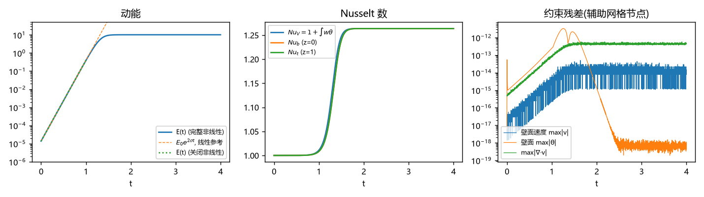
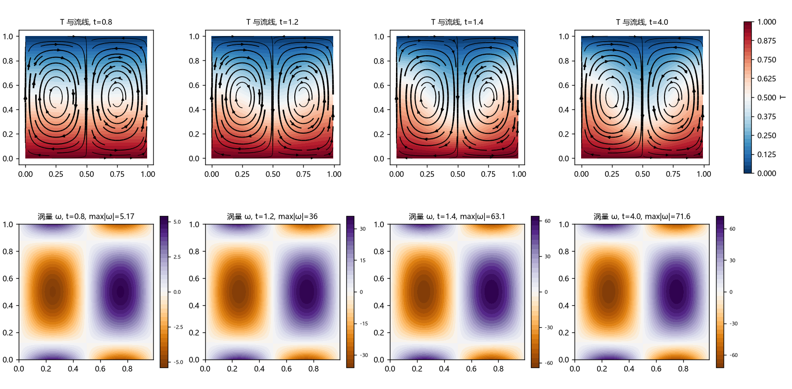
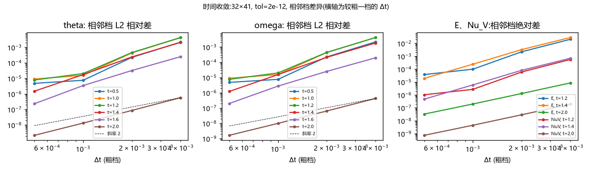
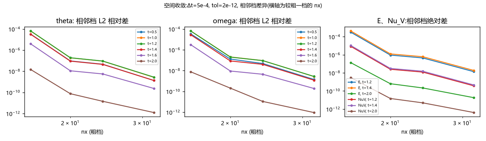
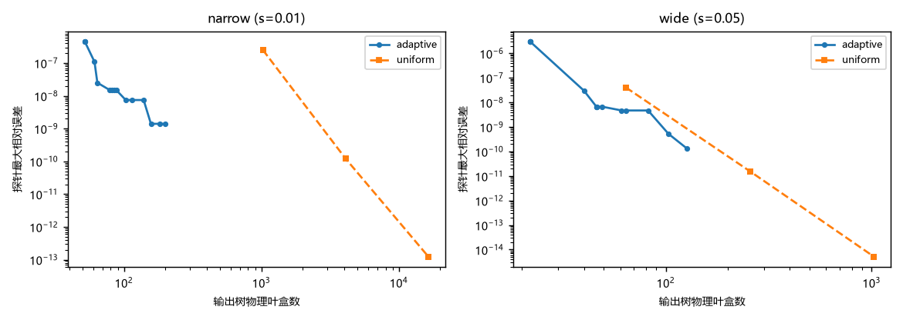
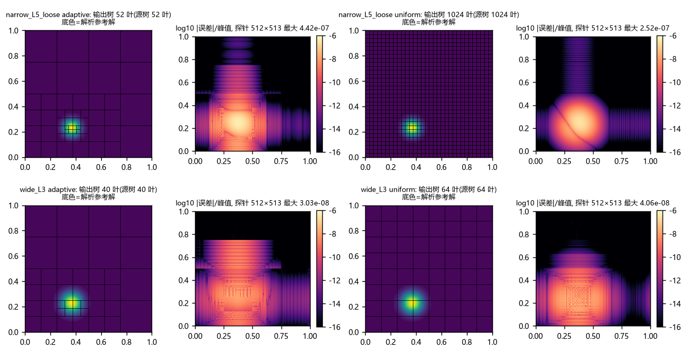
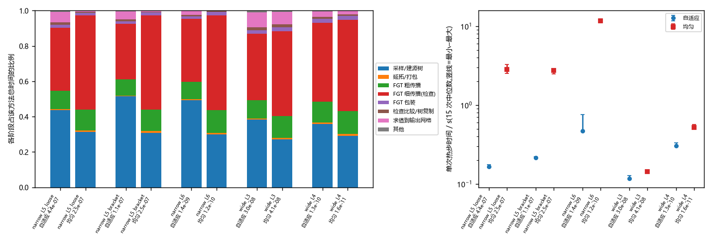
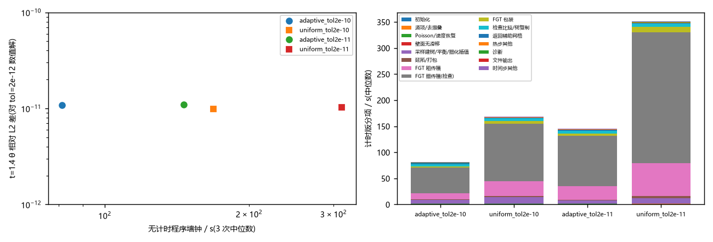
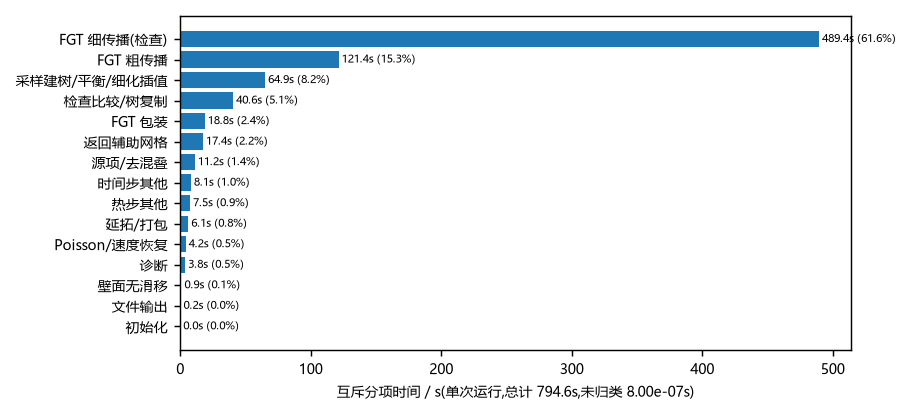

Rayleigh–Bénard 学习笔记
§ 01问题
上下两块板之间的流体，下热上冷。区域为 \(x,z\) 方向 \(\Omega=[0,1)\times[0,1]\)：\(x\) 方向周期，上下板固定温度且无滑移。令速度为 \(\boldsymbol v=(u,w)\)，温度写成
\(1-z\) 是静止导热态，\(\theta\) 是温度扰动。无量纲 Boussinesq 方程为
边界条件是
温度方程中的 \(+w\) 来自 \(w\partial_z(1-z)=-w\) 移到右端。静止导热态的浮力可以吸收到压力中，所以实际耦合浮力用 \(\theta\)。\(\Pr\) 控制动量扩散与热扩散的比例，\(\mathrm{Ra}\) 控制浮力强度；在本代码中我们固定 \(\Pr=1\)。
我们计算希望看到小扰动是否增长、怎样形成对流以及热传导如何变化。因此要同时检查速度、温度、边界约束、增长率和热量/能量平衡。
§ 02程序设计
2.1 用涡量与平均流消去压力
我们用主状态 flow_state 保存 omega(nx,nz)、mean_u(nz)、theta(nx,nz) 和 time。omega 只保留非零水平模态，水平平均速度单独保存在 mean_u。计算非线性项或诊断时，程序需要从这两份数据恢复完整的速度 \(u,w\)。
恢复过程是：非平均涡量 → Poisson 求流函数 → 对流函数求导 → 加回平均水平流。
二维不可压条件为 \(u_x+w_z=0\)。把速度表示为
其中 \(\overline u(z)\) 表示水平平均速度，\(\psi\) 表示非平均部分的流函数。由于平均流只依赖 \(z\)，便有
所以，只要从同一个流函数求这两个导数，就可以得到不可压的速度场。水平平均竖直速度没有单独保存：对不可压条件取水平平均得到 \(\partial_z\overline w=0\)，再用壁面 \(w=0\) 可知 \(\overline w=0\)。
这里采用的总涡量符号约定是
代入流函数表示，得到
程序把流函数的水平零模态设为零，因此 \(\overline\psi=0\)，进而 \(\overline\zeta=-\overline u'(z)\)。保存的 omega 是去掉平均分量后的涡量：
于是，恢复流函数就是解
初始化接口 set_velocity 按同样的拆分保存状态：先求 \(u\) 的水平平均，存入 mean_u；再计算 \(w_x-u_z\)，减掉它的水平平均，存入 omega。
get_velocity 调用 wall_stokes.velocity_from_vorticity。这个函数先对涡量做水平 Fourier 变换，写成
水平二阶导数变成乘 \(-a_k^2\)，所以每个水平模态分别满足
不同水平模态之间没有耦合。竖直方向用 Chebyshev 二阶微分矩阵 \(D_{zz}\) 离散，壁面值固定为零，只需求内部节点。记内部节点集合为 \(I\)，对应线性系统为
其中 \(\mathsf I\) 是单位矩阵。make_grid 在初始化时预计算各模态矩阵的逆，存为 g%inverse(:,:,m)；poisson_dirichlet 每次将它乘到当前涡量的内部节点值上。两壁输出保持零。
此时代码数组 psi(m,j) 的第一个指标是 Fourier 模态编号，第二个指标才是竖直节点编号。代码中的 psi(1,:)=0 清除水平零模态，不是把底壁设为零；两壁对应的是 psi(:,1) 和 psi(:,g%nz)，它们已经由 Poisson 求解器保持为零。
得到流函数后，程序按 \(u=\psi_z+\overline u\) 和 \(w=-\psi_x\) 恢复速度。
| 操作 | 数学含义 | 对应代码 |
|---|---|---|
| 对竖直节点求导 | 得到 \(\widehat{\psi_z}\) | matmul(psi,transpose(g%d)) |
| 水平合成并加回平均流 | 得到 \(u=\psi_z+\overline u\) | physical(...) 加 spread(mean_u,1,g%nx) |
| 对水平模态求导并取负 | 得到 \(\widehat w_k=-ia_k\widehat\psi_k\) | -cmplx(0.0_rk,g%frequency(m),rk)*psi(m,:) |
| 水平合成 | 得到节点值 \(w\) | physical(g,c) |
流函数在两壁恒为零，沿壁面的水平导数也为零，因此
保证了不穿透。但 \(\psi=0\) 不意味着 \(\psi_z=0\)，所以还不能单凭它保证切向无滑移：
时间推进时，impose_noslip 调整非平均涡量，使恢复出来的两壁 \(\psi_z=0\)；平均水平流另以零壁条件推进。velocity_from_vorticity 使用这份已经受约束的状态求速度，没有在恢复后强行覆盖壁面速度。壁面影响系统如何决定这份涡量，放在第 6 节解释。
2.2 全局辅助网格与局部自适应网格
slab_grid.make_grid 在 \(x\) 方向建立周期等距节点，在 \(z\) 方向建立包含两壁的 Chebyshev–Lobatto 节点。水平导数在 Fourier 空间中乘 \(ia_m\)，其中 \(a_m=2\pi m\)；竖直导数使用微分矩阵。当前 Fourier 转换采用显式矩阵乘法。
poisson_dirichlet(g,rho) 解的是 \(-\Delta p=\rho\)、上下壁为零的 Poisson 方程。
§ 03拆分成三个扩散
从当前状态恢复 \(u,w\) 后，physical_forcing 计算
linear 模式去掉上述对流乘积，保留浮力与温度反馈。接着 flow_forcing 把其转为涡量源，并拆出平均水平流源：
三份源放在 source(:,:,1:3)。三个通道的扩散系数依次是 \(\Pr,\Pr,1\)。
3.1 为什么源项还要解 Poisson 方程
FGT 能计算齐次热方程的传播，但有源项时，一步之内不断加入的贡献应该怎样计算？暂时考虑上下壁为零的标量方程
这里的 \(v\) 是某个通道的未知场，\(S(t)\) 仍然依赖空间，只是暂时省略了空间坐标。定义
下标 \(D\) 表示采用齐次 Dirichlet 壁面条件，不是另一个扩散系数。三个算子的作用分别是：
| 算子 | 对输入场做什么 | 在程序中的实现 |
|---|---|---|
| \(A\) | 计算 \(-D\Delta\) | 表示扩散方程的空间算子 |
| \(K\) | 解 \(-D\Delta r=f\)，且 \(r\) 两壁为零 | poisson_dirichlet 后除以扩散系数 |
| \(H\) | 从输入场出发，解 \(y_t=D\Delta y\) 并传播时间 \(h\) | heat_on_grid，内部使用自适应 FGT |
所以 \(Hf\) 表示“让初始场 \(f\) 自由扩散一个时间步”，而 \(Kf\) 表示“以 \(f\) 为右端求一个 Poisson 解”。
如果直接写出有源方程的一步解，会得到
先假设一步内 \(S\) 不随时间变化，令
也就是解
\(r\) 正是这份固定源对应的稳态扩散场，因为 \(D\Delta r+S=0\)。令 \(y=v-r\)，由于 \(r\) 不随时间变化，便有
原来的非齐次问题因此变成 \(y\) 的齐次热方程。先传播 \(v_0-r\)，再加回 \(r\)：
真实 RB 源依赖速度和温度，不会保持常数。程序在一个时间步内，用连接两端点的仿射函数近似它：
这里的等式指本步采用的近似源模型。因为 \(K\) 是固定的线性算子，相应源势也是仿射的：
此时 \(Ar=S\) 仍成立，但 \(r\) 会随时间移动。如果仍只令 \(y=v-r\)，求导便多出一项：
要消去这份额外的 \(-r_t\)，再求一个场 \(q\)，使
这就是第二次 Poisson 求解。由于本步的 \(r_t\) 为常量，\(q\) 也不随时间变化。现在取
逐项代入即可看到两次消去：
\(v,r,q\) 都具有零壁值，因此 \(y\) 也能交给零壁热传播器。它在两个端点的值为
由 \(y_1=Hy_0\)，解回 \(v_1\)，得到
当 \(S_1=S_0\) 时，\(r_1=r_0\)、\(q=0\)，它就退回前面的常源公式。\(q\) 的作用是补偿源势在本步内的变化，让变换后的场仍然满足齐次热方程。代码中变量 slope 保存的是 \(q=Kr_t=K^2S_t\)。
旧状态已知，所以 \(S_0\) 和 \(r_0\) 可直接计算。但 \(S_1\) 取决于尚未知的新状态 \(v_1\)，形成耦合。
advance_flow 用预测和固定次数校正来处理它：
- 先令
r1=r0，即暂时把源当作本步内的常源；此时slope=0，算出第一份候选新状态。 - 用候选新状态重新计算
r1，于是有了源随时间变化的估计；重新计算slope，再用上面的仿射源公式推进同一个时间步。 - 默认再更新一次新端点源并校正。
iteration=0,1,2共一次预测、两次校正，每轮都从同一个旧状态出发，到达同一个 \(t_0+h\)。
接下来来看如何计算 \(Hf\)：把构造好的传播输入 \(f\) 交给自适应 FGT，计算一次齐次热传播。
§ 04热传播
自由空间二维热核是
传播 \(Hf\) 就是用这个核对输入函数积分。这里的“源密度”是传给 \(H\) 的输入 \(f=v_0-r_0+q\) 等组合。为了处理水平周期和竖直零壁条件，heat_adaptive_mixed 做延拓：水平重复，竖直关于 \(z=1\) 反号反射，再在 \([0,2)\times[0,2)\) 上周期传播。也就是对 \(1\le z\le2\) 定义 \(\widetilde f(x,z)=-f(x,2-z)\)。奇延拓和周期重复使 \(z=0,1\) 处传播值为零；水平重复保持原来的周期为 1。
程序令 \(\delta=4Dh\)，调用周期 gaussian_tree 计算
其中积分核包含相应周期像。除以 \(\pi\delta\) 后得到归一化的二维热传播值。
4.1 FGT
通过 FGT 利用高斯核可压缩的展开与树层级组织，复用盒间作用，减少逐对积分的工作。
fgt_tree_layout.pack_tree 按层重排盒编号，建立父子索引与库要求的指针数组，并反转两个局部节点方向。fgt_adaptive.gaussian_tree 调用外部 boxfgt，再把编号和节点方向还原。
FGT 的作用是快速算核积分；自适应树的作用是用合适的局部多项式表示输入与输出。
§ 05自适应网格
外层桥梁是 slab_heat.heat_on_grid：输入辅助网格值，输出同一辅助网格上的热传播值。中间经历两种精度检查。
5.1 源采样：
sample_grid_field 先把辅助值转成固定的 Fourier–Chebyshev 系数。在每个叶盒的 \(12\times12\) 节点求值，再用额外的 \(25\times25\) 指针比较
若误差超限或未到最小层级，就细分为四个子盒；下一轮在新叶盒上重新求值同一个全局辅助展开。
默认源容差为 \(2\times10^{-10}\)，最小层级 1，最多 4096 个盒、层级 7，源采样最多 9 轮。mark_unbalanced 补充细化，使邻接叶盒的层级差至多为 1，包含水平方向周期邻接。
5.2 输出检查：
输入容易表示，并不自动意味着传播输出也能在相同树上充分表示。checked_heat_step 的检查过程为：
- 在当前输入树
work上真正传播，得到coarse。 - 复制输入树，将每个叶盒暂时细分一层。把父盒输入多项式限制到子盒，再真正传播，得到
fine。 - 在这些子盒节点上，比较粗输出的插值值与细树独立传播值，得到每个父叶盒的 \(\eta_{\rm output}\)。
- 全部通过则接受当前树上的
coarse；否则细化超限盒，恢复平衡，并重新传播同一份数值输入。
§ 06处理无滑移壁面
温度和平均水平流可以直接用零壁热传播。但非零水平模态的涡量壁值不能简单设为零：它必须让恢复出来的速度满足无滑移。
对一个非零水平波数 \(a_m\)，准备两个满足 \((\partial_{zz}-a_m^2)\ell=0\) 的提升函数，分别承载底壁与顶壁涡量值。记提升映射为 \(L_m\)，旧壁涡量为 \(g_0\)；则 \(\omega_0-L_mg_0\) 具有零壁值，可交给 FGT 热传播。
新壁涡量 \(g_1\) 尚未知。假设壁数据在一步内也作仿射变化，预计算
结合源势修正，体积部分先算成
完整新涡量为 \(\omega_1=R_m+B_mg_1\)。对它解 \(-\Delta\psi_1=\omega_1\)，要求底、顶壁的 \(\psi_{1,z}\) 都为零，就得到关于 \(g_1\) 的 \(2\times2\) 影响系统。impose_noslip 解这个系统，把壁修正加到 rhs，使两壁切向速度消失。
make_wall_operator 在初始化时用正弦级数计算两个固定提升函数的热响应，并准备影响矩阵逆。这里仅两列壁响应走解析预计算，普通体积场仍由 FGT 传播。水平零模态由 mean_u 另行处理，代码还显式清除 Nyquist 涡量模态。
§ 07总体流程
run_rb 先用连续线性参考问题生成初始模态，再调用 configure_solver 建立辅助网格与壁算子。每个时间步的核心是 advance_flow：
旧状态 omega、mean_u、theta
→ 恢复速度，检查步长保护条件
→ 计算旧端点源势 r0，令 r1=r0 作预测
→ 对同一个时间区间做一次预测、两次端点校正
→ 用 r0、r1 构造 q 和三个热传播输入
→ heat_on_grid：辅助展开 → 源树 → 带输出检查的 FGT → 辅助值
→ 涡量：解壁面影响系统；平均流：取水平平均；温度：加源势修正
→ 根据候选新状态重新计算 r1，供下一次校正
→ 返回 time+h 的新状态
→ diagnostics、写历史、累积平衡、检查约束
默认 ncorrect=2，循环 iteration=0,1,2 共三轮。校正次数固定，没有非线性迭代残差停止判据。每轮通常传播涡量、平均流、温度三个通道。程序包含对流 CFL 上限 0.9 和 \(h\sqrt{|\mathrm{Ra}\Pr|}\le0.5\) 的保护条件。
7.1 调用关系
| 层次 | 文件 |
|---|---|
| 实验入口 | run_rb、rb_linear_reference |
| 耦合与推进 | boussinesq_solver |
| 全局辅助算子 | slab_grid、numerical_tools |
| 无滑移 | wall_stokes |
| 热传播桥梁 | slab_heat |
| 两层自适应 | adaptive_boxes、heat_output_control |
| 核积分封装 | heat_adaptive_mixed、fgt_adaptive、fgt_tree_layout、fgt_single_box |
| 局部插值 | cheb_box |
§ 08运行
8.1 编译
# 当前目录为 rb_plan_2D
.\build_rb.ps1
.\run_rb.ps1 -Mode super -Dt 0.001 -Final 2 -Nx 24 -Nz 33 -Ra 0 -OutputPrefix rb_v2
# 在临界值附近观察很小扰动；Ra 必须显式指定
.\run_rb.ps1 -Mode onset -Dt 0.001 -Final 0.05 -Ra 3789 -OutputPrefix rb_onset_v2
# 关闭非线性对流，比较连续线性增长率
.\run_rb.ps1 -Mode linear -Dt 0.001 -Final 0.05 -Ra 3789 -OutputPrefix rb_linear_v2
run_rb.ps1 默认 \(h=0.001\)、终止时间 2、前缀 rb_final；裸 run_rb.exe 默认 \(h=0.002\)、前缀 rb，build_rb.ps1 -Run 也显式使用后者。主程序要求终止时间是输入步长的整数倍。每次实验使用不同前缀，便于保留结果。
| 模式 | 初始幅值 | 对流非线性 |
|---|---|---|
super |
\(10^{-2}\) | 开启 |
onset |
\(10^{-5}\) | 开启 |
linear |
\(10^{-5}\) | 关闭 |
conduction |
0 | 开启，但零状态保持导热态 |
Ra<=0 时程序取 \(1.2\mathrm{Ra}_c\)，不代表没有浮力。onset 只改变初始幅值，不会自动把 Rayleigh 数设到临界附近。
8.2 临界值
当前水平周期为 1，允许波数为 \(2\pi m\)。rb_linear_reference 求的是 \(\Pr=1\) 下的连续竖直 ODE 参考；主程序用对称 \(m=1\) 模态，得到
默认 \(\mathrm{Ra}\approx4541.20874674413\)，对应线性参考增长率 \(\sigma\approx5.13810399248\)。
初始场由参考模态 \(W(z),\Theta(z)\) 构造：
它在连续层面满足不可压与壁面条件，随后采样到辅助网格。
8.3 四类输出与诊断
| 文件后缀 | 内容 | 用途 |
|---|---|---|
_history.csv |
每步 14 个诊断量，含初始时刻 | 看增长、热流、约束及耗散随时间变化 |
_summary.txt |
参考值、拟合值、终态、平衡误差、FGT 统计 | 汇总数值证据 |
_field.csv |
终态 x,z,u,w,theta,T |
绘图及空间比较 |
_checkpoint.bin |
参数及完整状态 | 供 load_checkpoint 接口恢复；当前 CLI 没有重启参数 |
最重要的诊断是动能 \(E=\tfrac12\int(u^2+w^2)\)、温度扰动能 \(K_\theta=\tfrac12\int\theta^2\)，以及
瞬态时三种 Nusselt 数不必完全相等。令 \(Q=\int\theta\)、\(Q_b=\int(1-z)\theta\)、\(Q_t=\int z\theta\)，有
能量平衡为
其中 \(D_u=\Pr\int|\nabla\boldsymbol v|^2\)，\(D_\theta=\int|\nabla\theta|^2\)。主程序用梯形公式累积右端，与状态变化比较。wall、temp_wall、divergence 分别监测两壁速度、两壁温度扰动、散度；任一超过 \(10^{-7}\) 就停止。
若在线性阶段 \(E\propto e^{2\sigma t}\)，可拟合 \(\log\sqrt E\) 的斜率。主程序默认用 \([t_{\rm final}/4,t_{\rm final}]\) 拟合。
§ 09完整源码与批注
9.1 cheb_box.f90
局部叶盒的节点与插值基础。输入是一个盒的节点值，输出是目标点上的多项式值。
module cheb_box
use iso_fortran_env, only: real64
implicit none
private
integer, parameter, public :: rk = real64
real(rk), parameter :: pi = acos(-1.0_rk)
public :: cheb_nodes, cheb_matrix, evaluate_box
contains
subroutine cheb_nodes(k, nodes)
integer, intent(in) :: k
real(rk), intent(out) :: nodes(k)
integer :: j
if (k < 2) error stop "k must be at least 2"
do j = 1, k
nodes(j) = cos(pi * (real(j, rk) - 0.5_rk) / real(k, rk))
end do
end subroutine cheb_nodes
subroutine cheb_matrix(k, target, matrix)
integer, intent(in) :: k
real(rk), intent(in) :: target(:)
real(rk), intent(out) :: matrix(size(target), k)
real(rk) :: nodes(k), weights(k), angle
integer :: i, j
call cheb_nodes(k, nodes)
do j = 1, k
angle = pi * (real(j, rk) - 0.5_rk) / real(k, rk)
weights(j) = (-1.0_rk)**(j - 1) * sin(angle)
end do
do i = 1, size(target)
j = minloc(abs(target(i) - nodes), dim=1)
if (abs(target(i) - nodes(j)) <= 8.0_rk*epsilon(1.0_rk)) then
matrix(i, :) = 0.0_rk
matrix(i, j) = 1.0_rk
else
matrix(i, :) = weights / (target(i) - nodes)
matrix(i, :) = matrix(i, :) / sum(matrix(i, :))
end if
end do
end subroutine cheb_matrix
subroutine evaluate_box(values, center, width, x, z, u)
real(rk), intent(in) :: values(:, :)
real(rk), intent(in) :: center(2), width, x(:), z(:)
real(rk), intent(out) :: u(size(x), size(z))
real(rk) :: bx(size(x), size(values, 1))
real(rk) :: bz(size(z), size(values, 2))
integer :: k
k = size(values, 1)
if (size(values, 2) /= k .or. width <= 0.0_rk) error stop "invalid box"
call cheb_matrix(k, 2.0_rk*(x - center(1))/width, bx)
call cheb_matrix(k, 2.0_rk*(z - center(2))/width, bz)
u = matmul(bx, matmul(values, transpose(bz)))
end subroutine evaluate_box
end module cheb_box
9.2 adaptive_boxes.f90
四叉树数据结构、通用建树、目标求值与周期平衡。最终源采样的特定循环还在 slab_heat 中。
module adaptive_boxes
use cheb_box, only: rk, cheb_nodes, evaluate_box
use, intrinsic :: ieee_arithmetic, only: ieee_is_finite
implicit none
private
public :: adaptive_field, build_field, evaluate_field, mark_unbalanced
type :: adaptive_field
integer :: k = 0, nbox = 0
real(rk), allocatable :: center(:,:), width(:)
real(rk), allocatable :: values(:,:,:), indicator(:)
integer, allocatable :: level(:), parent(:), child(:,:)
end type adaptive_field
abstract interface
function scalar_field(x, z) result(f)
import rk
real(rk), intent(in) :: x, z
real(rk) :: f
end function scalar_field
end interface
contains
subroutine build_field(fun, k, tolerance, max_level, max_boxes, field, balance)
procedure(scalar_field) :: fun
integer, intent(in) :: k, max_level, max_boxes
real(rk), intent(in) :: tolerance
type(adaptive_field), intent(out) :: field
logical, intent(in), optional :: balance
logical :: enforce_balance, marked(max_boxes)
real(rk) :: nodes(k), xs(k), zs(k)
real(rk) :: xp(2*k+1), zp(2*k+1)
real(rk) :: check_values(2*k+1,2*k+1)
real(rk) :: truth(2*k+1,2*k+1), r(2*k+1), offset(2)
integer :: b, i, j, c, id, m
if (k < 2 .or. max_level < 0 .or. max_boxes < 1) error stop "invalid tree settings"
if (.not. ieee_is_finite(tolerance) .or. tolerance <= 0.0_rk) error stop "invalid tolerance"
enforce_balance = .false.
if (present(balance)) enforce_balance = balance
marked = .false.
field%k = k
field%nbox = 1
allocate(field%center(2,max_boxes), field%width(max_boxes))
allocate(field%values(k,k,max_boxes), field%indicator(max_boxes))
allocate(field%level(max_boxes), field%parent(max_boxes))
allocate(field%child(4,max_boxes))
field%center = 0.0_rk
field%width = 0.0_rk
field%values = 0.0_rk
field%indicator = 0.0_rk
field%level = 0
field%parent = 0
field%child = 0
field%center(:,1) = [0.5_rk,0.5_rk]
field%width(1) = 1.0_rk
call cheb_nodes(k, nodes)
m = 2*k+1
do i = 1, m
r(i) = -1.0_rk + 2.0_rk*real(i-1,rk)/real(m-1,rk)
end do
b = 1
do
do while (b <= field%nbox)
if (field%child(1,b) /= 0) then
b = b+1
cycle
end if
xs = field%center(1,b) + field%width(b)*nodes/2.0_rk
zs = field%center(2,b) + field%width(b)*nodes/2.0_rk
do j = 1, k
do i = 1, k
field%values(i,j,b) = fun(xs(i), zs(j))
end do
end do
xp = field%center(1,b) + field%width(b)*r/2.0_rk
zp = field%center(2,b) + field%width(b)*r/2.0_rk
call evaluate_box(field%values(:,:,b), field%center(:,b), field%width(b), xp, zp, check_values)
do j = 1, m
do i = 1, m
truth(i,j) = fun(xp(i), zp(j))
end do
end do
if (.not. all(ieee_is_finite(check_values)) .or. .not. all(ieee_is_finite(truth))) error stop "nonfinite field"
field%indicator(b) = maxval(abs(check_values-truth))
if (field%indicator(b) > tolerance .or. marked(b)) then
if (field%level(b) >= max_level) error stop "maximum level reached"
if (field%nbox+4 > max_boxes) error stop "maximum box count reached"
do c = 1, 4
id = field%nbox+c
offset = [real(2*mod(c-1,2)-1,rk), real(2*((c-1)/2)-1,rk)]
field%center(:,id) = field%center(:,b) + field%width(b)*offset/4.0_rk
field%width(id) = field%width(b)/2.0_rk
field%level(id) = field%level(b)+1
field%parent(id) = b
field%child(c,b) = id
end do
field%nbox = field%nbox+4
end if
b = b+1
end do
if (.not. enforce_balance) exit
call mark_unbalanced(field, marked)
if (.not. any(marked(1:field%nbox))) exit
b = 1
end do
end subroutine build_field
subroutine evaluate_field(field, x, z, u)
type(adaptive_field), intent(in) :: field
real(rk), intent(in) :: x(:), z(:)
real(rk), intent(out) :: u(size(x),size(z))
real(rk) :: value(1,1)
integer :: i, j, b, c
if (field%nbox < 1) error stop "empty field"
if (.not. all(ieee_is_finite(x)) .or. .not. all(ieee_is_finite(z))) error stop "nonfinite target"
if (any(x < 0.0_rk) .or. any(x > 1.0_rk) .or. any(z < 0.0_rk) .or. any(z > 1.0_rk)) error stop "target outside unit box"
do j = 1, size(z)
do i = 1, size(x)
b = 1
do while (field%child(1,b) /= 0)
c = 1
if (x(i) >= field%center(1,b)) c = c+1
if (z(j) >= field%center(2,b)) c = c+2
b = field%child(c,b)
end do
call evaluate_box(field%values(:,:,b), field%center(:,b), field%width(b), [x(i)], [z(j)], value)
u(i,j) = value(1,1)
end do
end do
end subroutine evaluate_field
subroutine mark_unbalanced(field, marked)
type(adaptive_field), intent(in) :: field
logical, intent(out) :: marked(:)
real(rk), parameter :: geometry_tol = 32.0_rk*epsilon(1.0_rk)
real(rk) :: distance(2), reach
integer :: a, b
marked = .false.
do a = 1, field%nbox
if (field%child(1,a) /= 0) cycle
do b = a+1, field%nbox
if (field%child(1,b) /= 0) cycle
if (abs(field%level(a)-field%level(b)) <= 1) cycle
distance = abs(field%center(:,a)-field%center(:,b))
distance(1) = min(distance(1), 1.0_rk-distance(1))
reach = (field%width(a)+field%width(b))/2.0_rk
if (any(distance > reach+geometry_tol)) cycle
if (field%level(a) < field%level(b)) then
marked(a) = .true.
else
marked(b) = .true.
end if
end do
end do
end subroutine mark_unbalanced
end module adaptive_boxes
9.3 fgt_single_box.f90
外部库接口声明与单盒教学封装。最终路径复用声明，由 fgt_adaptive 调用库。
module fgt_single_box
use cheb_box, only: rk
use, intrinsic :: ieee_arithmetic, only: ieee_is_finite
implicit none
private
public :: gaussian_box, boxfgt
interface
subroutine boxfgt(nd, d, delta, eps, ipoly, iperiod, k, np, nb, nlev, ltree, itree, iptr, centers, boxsize, fvals, ifpgh, pot, grad, hess, ifnewtree, nt, targs, ifpghtarg, pote, grade, hesse, timeinfo)
import rk
integer :: nd, d, ipoly, k, np, nb, nlev, ltree
integer, intent(inout) :: iperiod
integer :: itree(ltree), iptr(8), ifpgh, ifnewtree, nt, ifpghtarg
real(rk) :: delta, eps, centers(d,nb), boxsize(0:nlev)
real(rk) :: fvals(nd,np,nb), pot(nd,np,nb)
real(rk) :: grad(nd,d,np,*), hess(nd,d*(d+1)/2,np,*)
real(rk) :: targs(d,nt), pote(nd,nt)
real(rk) :: grade(nd,d,*), hesse(nd,d*(d+1)/2,*), timeinfo(*)
end subroutine boxfgt
end interface
contains
subroutine gaussian_box(k, values, center, width, delta, tolerance, potential)
integer, intent(in) :: k
real(rk), intent(in) :: values(k,k), center(2), width, delta, tolerance
real(rk), intent(out) :: potential(k,k)
integer :: tree(20), ptr(8), nb, nlev, ltree, np, iperiod
real(rk) :: centers(2,1), boxsize(0:0), dd, eps
real(rk) :: f(1,k*k,1), p(1,k*k,1)
real(rk) :: grad(1,2,k*k,1), hess(1,3,k*k,1)
real(rk) :: target(2,1), pt(1,1), gt(1,2,1), ht(1,3,1), times(100)
if (k < 2 .or. k > 32) error stop "unsupported order"
if (.not. all(ieee_is_finite([center, width, delta, tolerance]))) error stop "nonfinite parameter"
if (width <= 0.0_rk .or. delta <= 0.0_rk) error stop "invalid geometry or delta"
if (tolerance < 1.0e-14_rk .or. tolerance >= 0.1_rk) error stop "use a tolerance between 1e-14 and 0.1"
if (.not. all(ieee_is_finite(values))) error stop "nonfinite density"
nb = 1
nlev = 0
ltree = 20
np = k*k
iperiod = 0
ptr = [1, 3, 4, 5, 6, 10, 11, 20]
tree = -1
tree(1:2) = [1, 1]
tree(ptr(2)) = 0
tree(ptr(4)) = 0
tree(ptr(6)) = 1
tree(ptr(7)) = 1
centers(:,1) = center
boxsize(0) = width
dd = delta
eps = tolerance
f(1,:,1) = reshape(values, [np])
p = 0.0_rk
grad = 0.0_rk
hess = 0.0_rk
target = 0.0_rk
pt = 0.0_rk
gt = 0.0_rk
ht = 0.0_rk
times = 0.0_rk
call boxfgt(1, 2, dd, eps, 1, iperiod, k, np, nb, nlev, ltree, tree, ptr, centers, boxsize, f, 1, p, grad, hess, 0, 0, target, 0, pt, gt, ht, times)
if (.not. all(ieee_is_finite(p))) error stop "nonfinite FGT output"
potential = reshape(p(1,:,1), [k,k])
end subroutine gaussian_box
end module fgt_single_box
9.4 fgt_tree_layout.f90
把项目四叉树转为外部 FGT 格式，统一编号与局部节点方向。
module fgt_tree_layout
use cheb_box, only: rk
use adaptive_boxes, only: adaptive_field
implicit none
private
public :: fgt_layout, pack_tree
type :: fgt_layout
integer :: k = 0, nbox = 0, nlevels = 0, npbox = 0, ltree = 0
integer :: ptr(8) = 0
integer, allocatable :: tree(:), new_to_old(:), old_to_new(:)
real(rk), allocatable :: centers(:,:), boxsize(:), density(:,:,:)
end type fgt_layout
contains
subroutine pack_tree(field, packed)
type(adaptive_field), intent(in) :: field
type(fgt_layout), intent(out) :: packed
integer :: nb, lev, first, b, old, c, base
if (field%nbox < 1 .or. field%k < 2 .or. field%k > 32) error stop "invalid field for FGT"
nb = field%nbox
packed%k = field%k
packed%nbox = nb
packed%nlevels = maxval(field%level(1:nb))
packed%npbox = field%k**2
packed%ptr(1) = 1
packed%ptr(2) = packed%ptr(1)+2*(packed%nlevels+1)
packed%ptr(3) = packed%ptr(2)+nb
packed%ptr(4) = packed%ptr(3)+nb
packed%ptr(5) = packed%ptr(4)+nb
packed%ptr(6) = packed%ptr(5)+4*nb
packed%ptr(7) = packed%ptr(6)+nb
packed%ptr(8) = packed%ptr(7)+9*nb
packed%ltree = packed%ptr(8)
allocate(packed%tree(packed%ltree))
allocate(packed%new_to_old(nb), packed%old_to_new(nb))
allocate(packed%centers(2,nb), packed%boxsize(0:packed%nlevels))
allocate(packed%density(1,packed%npbox,nb))
packed%tree = -1
packed%density = 0.0_rk
packed%tree(packed%ptr(6):packed%ptr(6)+nb-1) = 0
b = 0
do lev = 0, packed%nlevels
first = b+1
do old = 1, nb
if (field%level(old) /= lev) cycle
b = b+1
packed%new_to_old(b) = old
packed%old_to_new(old) = b
end do
if (b < first) error stop "missing tree level"
base = packed%ptr(1)+2*lev
packed%tree(base:base+1) = [first,b]
packed%boxsize(lev) = field%width(1)/2.0_rk**lev
end do
if (b /= nb) error stop "invalid box levels"
do b = 1, nb
old = packed%new_to_old(b)
packed%centers(:,b) = field%center(:,old)
packed%tree(packed%ptr(2)+b-1) = field%level(old)
if (field%parent(old) /= 0) then
packed%tree(packed%ptr(3)+b-1) = packed%old_to_new(field%parent(old))
end if
packed%tree(packed%ptr(4)+b-1) = 0
if (field%child(1,old) == 0) then
packed%density(1,:,b) = reshape(field%values(field%k:1:-1,field%k:1:-1,old), [packed%npbox])
else
packed%tree(packed%ptr(4)+b-1) = 4
base = packed%ptr(5)+4*(b-1)
do c = 1, 4
packed%tree(base+c-1) = packed%old_to_new(field%child(c,old))
end do
end if
end do
end subroutine pack_tree
end module fgt_tree_layout
9.5 fgt_adaptive.f90
实际树级 boxfgt 调用及返回数据还原。输出是未归一化高斯积分。
module fgt_adaptive
use cheb_box, only: rk
use adaptive_boxes, only: adaptive_field
use fgt_tree_layout, only: fgt_layout, pack_tree
use fgt_single_box, only: boxfgt
use, intrinsic :: ieee_arithmetic, only: ieee_is_finite
implicit none
private
public :: gaussian_tree
contains
subroutine gaussian_tree(field, delta, tolerance, potential, periodic)
type(adaptive_field), intent(in) :: field
real(rk), intent(in) :: delta, tolerance
real(rk), allocatable, intent(out) :: potential(:,:,:)
logical, intent(in), optional :: periodic
type(fgt_layout), allocatable :: packed
integer :: k, np, nb, nlev, ltree, iperiod, b, old
real(rk) :: dd, eps, values(field%k,field%k)
real(rk), allocatable :: p(:,:,:), grad(:,:,:,:), hess(:,:,:,:)
real(rk) :: target(2,1), pt(1,1), gt(1,2,1), ht(1,3,1), times(100)
if (.not. all(ieee_is_finite([delta,tolerance]))) error stop "nonfinite FGT parameter"
if (delta <= 0.0_rk) error stop "delta must be positive"
if (tolerance < 1.0e-14_rk .or. tolerance >= 0.1_rk) error stop "invalid FGT tolerance"
allocate(packed)
call pack_tree(field, packed)
if (.not. all(ieee_is_finite(packed%density))) error stop "nonfinite density"
k = packed%k
np = packed%npbox
nb = packed%nbox
nlev = packed%nlevels
ltree = packed%ltree
iperiod = 0
if (present(periodic)) then
if (periodic) iperiod = 1
end if
dd = delta
eps = tolerance
allocate(p(1,np,nb), grad(1,2,np,nb), hess(1,3,np,nb))
allocate(potential(k,k,nb))
p = 0.0_rk
grad = 0.0_rk
hess = 0.0_rk
potential = 0.0_rk
target = 0.0_rk
pt = 0.0_rk
gt = 0.0_rk
ht = 0.0_rk
times = 0.0_rk
call boxfgt(1, 2, dd, eps, 1, iperiod, k, np, nb, nlev, ltree, packed%tree, packed%ptr, packed%centers, packed%boxsize, packed%density, 1, p, grad, hess, 0, 0, target, 0, pt, gt, ht, times)
if (nb /= field%nbox .or. nlev /= packed%nlevels .or. ltree /= packed%ltree) error stop "unexpected tree change"
do b = 1, nb
old = packed%new_to_old(b)
if (field%child(1,old) /= 0) cycle
if (.not. all(ieee_is_finite(p(1,:,b)))) error stop "nonfinite FGT output"
values = reshape(p(1,:,b), [k,k])
potential(:,:,old) = values(k:1:-1,k:1:-1)
end do
end subroutine gaussian_tree
end module fgt_adaptive
9.6 heat_adaptive_mixed.f90
周期复制、竖直奇反射和热核归一化，将高斯积分变成混合边界热传播。
module heat_adaptive_mixed
use cheb_box, only: rk
use adaptive_boxes, only: adaptive_field
use fgt_adaptive, only: gaussian_tree
use, intrinsic :: ieee_arithmetic, only: ieee_is_finite
implicit none
private
public :: extend_mixed, heat_step_adaptive
contains
subroutine extend_mixed(field, extended)
type(adaptive_field), intent(in) :: field
type(adaptive_field), intent(out) :: extended
integer, parameter :: reflected_child(4) = [3,4,1,2]
integer :: nb, k, q, b, c, old_child, offset, id
if (field%nbox < 1) error stop "empty input tree"
if (maxval(abs(field%center(:,1)-0.5_rk)) > 1.0e-12_rk .or. abs(field%width(1)-1.0_rk) > 1.0e-12_rk) &
error stop "expected a unit physical box"
nb = field%nbox
k = field%k
extended%k = k
extended%nbox = 1+4*nb
allocate(extended%center(2,extended%nbox), extended%width(extended%nbox))
allocate(extended%values(k,k,extended%nbox), extended%indicator(extended%nbox))
allocate(extended%level(extended%nbox), extended%parent(extended%nbox))
allocate(extended%child(4,extended%nbox))
extended%center = 0.0_rk
extended%width = 0.0_rk
extended%values = 0.0_rk
extended%indicator = 0.0_rk
extended%level = 0
extended%parent = 0
extended%child = 0
extended%center(:,1) = [1.0_rk,1.0_rk]
extended%width(1) = 2.0_rk
do q = 1, 4
offset = 1+(q-1)*nb
extended%child(q,1) = offset+1
do b = 1, nb
id = offset+b
extended%center(:,id) = field%center(:,b)
extended%center(1,id) = field%center(1,b)+real(mod(q-1,2),rk)
extended%width(id) = field%width(b)
extended%level(id) = field%level(b)+1
extended%indicator(id) = field%indicator(b)
extended%values(:,:,id) = field%values(:,:,b)
if (b == 1) then
extended%parent(id) = 1
else
extended%parent(id) = offset+field%parent(b)
end if
if (q >= 3) then
extended%center(2,id) = 2.0_rk-field%center(2,b)
extended%values(:,:,id) = -field%values(:,k:1:-1,b)
end if
if (field%child(1,b) == 0) cycle
do c = 1, 4
old_child = c
if (q >= 3) old_child = reflected_child(c)
extended%child(c,id) = offset+field%child(old_child,b)
end do
end do
end do
end subroutine extend_mixed
subroutine heat_step_adaptive(field, diffusion, step, tolerance, potential)
type(adaptive_field), intent(in) :: field
real(rk), intent(in) :: diffusion, step, tolerance
real(rk), allocatable, intent(out) :: potential(:,:,:)
type(adaptive_field), allocatable :: extended
real(rk), allocatable :: all_potential(:,:,:)
real(rk), parameter :: pi = acos(-1.0_rk)
real(rk) :: delta
if (.not. all(ieee_is_finite([diffusion,step]))) error stop "nonfinite heat parameter"
if (diffusion <= 0.0_rk .or. step <= 0.0_rk) error stop "diffusion and step must be positive"
delta = 4.0_rk*diffusion*step
allocate(extended)
call extend_mixed(field, extended)
call gaussian_tree(extended, delta, tolerance, all_potential, periodic=.true.)
allocate(potential(field%k,field%k,field%nbox))
potential = all_potential(:,:,2:field%nbox+1)/(pi*delta)
end subroutine heat_step_adaptive
end module heat_adaptive_mixed
9.7 heat_output_control.f90
通过粗细树独立传播比较输出表示，必要时细化同一输入多项式并重算。
module heat_output_control
use cheb_box, only: rk, cheb_nodes, evaluate_box
use adaptive_boxes, only: adaptive_field, mark_unbalanced
use heat_adaptive_mixed, only: heat_step_adaptive
use, intrinsic :: ieee_arithmetic, only: ieee_is_finite
implicit none
private
public :: refine_leaves, checked_heat_step
contains
subroutine refine_leaves(field, marked, max_level)
type(adaptive_field), intent(inout) :: field
logical, intent(in) :: marked(:)
integer, intent(in) :: max_level
real(rk) :: nodes(field%k), x(field%k), z(field%k), offset(2)
integer :: b, c, id, old_count
old_count = field%nbox
if (size(marked) < old_count) error stop "mark array too short"
call cheb_nodes(field%k, nodes)
do b = 1, old_count
if (.not. marked(b) .or. field%child(1,b) /= 0) cycle
if (field%level(b) >= max_level) error stop "maximum level reached"
if (field%nbox+4 > size(field%width)) error stop "maximum box count reached"
do c = 1, 4
id = field%nbox+c
offset = [real(2*mod(c-1,2)-1,rk), real(2*((c-1)/2)-1,rk)]
field%center(:,id) = field%center(:,b)+field%width(b)*offset/4.0_rk
field%width(id) = field%width(b)/2.0_rk
field%level(id) = field%level(b)+1
field%parent(id) = b
field%child(:,id) = 0
field%child(c,b) = id
x = field%center(1,id)+field%width(id)*nodes/2.0_rk
z = field%center(2,id)+field%width(id)*nodes/2.0_rk
call evaluate_box(field%values(:,:,b), field%center(:,b), field%width(b), x, z, field%values(:,:,id))
field%indicator(id) = -1.0_rk
end do
field%indicator(b) = -1.0_rk
field%nbox = field%nbox+4
end do
end subroutine refine_leaves
subroutine checked_heat_step(source, diffusion, step, fgt_eps, output_tol, &
max_level, max_passes, output, passes, first_error)
type(adaptive_field), intent(in) :: source
real(rk), intent(in) :: diffusion, step, fgt_eps, output_tol
integer, intent(in) :: max_level, max_passes
type(adaptive_field), intent(out) :: output
integer, intent(out) :: passes
real(rk), intent(out) :: first_error
type(adaptive_field) :: work, probe
real(rk), allocatable :: coarse(:,:,:), fine(:,:,:), eta(:)
logical, allocatable :: marked(:)
real(rk) :: nodes(source%k), x(source%k), z(source%k)
real(rk) :: predicted(source%k,source%k)
integer :: b, c, id
if (.not. ieee_is_finite(output_tol) .or. output_tol <= 0.0_rk) error stop "invalid output tolerance"
if (max_passes < 1 .or. max_level < 0) error stop "invalid refinement limit"
work = source
allocate(marked(size(work%width)), eta(size(work%width)))
call mark_unbalanced(work, marked)
if (any(marked)) error stop "input tree must be balanced"
call cheb_nodes(source%k, nodes)
passes = 0
first_error = -1.0_rk
do
passes = passes+1
call heat_step_adaptive(work, diffusion, step, fgt_eps, coarse)
probe = work
marked = .false.
marked(1:work%nbox) = work%child(1,1:work%nbox) == 0
call refine_leaves(probe, marked, max_level+1)
call heat_step_adaptive(probe, diffusion, step, fgt_eps, fine)
eta = 0.0_rk
do b = 1, work%nbox
if (work%child(1,b) /= 0) cycle
do c = 1, 4
id = probe%child(c,b)
x = probe%center(1,id)+probe%width(id)*nodes/2.0_rk
z = probe%center(2,id)+probe%width(id)*nodes/2.0_rk
call evaluate_box(coarse(:,:,b), work%center(:,b), work%width(b), x, z, predicted)
eta(b) = max(eta(b), maxval(abs(predicted-fine(:,:,id))))
end do
end do
if (.not. all(ieee_is_finite(eta))) error stop "nonfinite output indicator"
if (passes == 1) first_error = maxval(eta)
if (maxval(eta) <= output_tol) then
output = work
output%values(:,:,1:work%nbox) = coarse
output%indicator = -1.0_rk
do b = 1, work%nbox
if (work%child(1,b) == 0) output%indicator(b) = eta(b)
end do
return
end if
if (passes >= max_passes) error stop "output resolution did not converge"
marked = eta > output_tol
call refine_leaves(work, marked, max_level)
do
call mark_unbalanced(work, marked)
if (.not. any(marked)) exit
call refine_leaves(work, marked, max_level)
end do
end do
end subroutine checked_heat_step
end module heat_output_control
9.8 numerical_tools.f90
小型矩阵和插值/微分工具。含保留的通用求积函数，阅读时以实际调用为准。
module numerical_tools
use cheb_box, only: rk
implicit none
private
public :: pi, inverse_matrix, gauss_rule, interpolation_matrix, differentiation_matrix
real(rk), parameter :: pi = acos(-1.0_rk)
contains
function inverse_matrix(a) result(b)
real(rk), intent(in) :: a(:,:)
real(rk) :: b(size(a,1),size(a,1)), work(size(a,1),size(a,1)), row(size(a,1)), pivot, factor
integer :: n, i, j, p
n = size(a,1)
if (size(a,2) /= n) error stop "inverse requires a square matrix"
work = a
b = 0
do i = 1, n
b(i,i) = 1
end do
do j = 1, n
p = j-1+maxloc(abs(work(j:n,j)),dim=1)
if (abs(work(p,j)) < tiny(1.0_rk)) error stop "singular matrix"
row = work(j,:)
work(j,:) = work(p,:)
work(p,:) = row
row = b(j,:)
b(j,:) = b(p,:)
b(p,:) = row
pivot = work(j,j)
work(j,:) = work(j,:)/pivot
b(j,:) = b(j,:)/pivot
do i = 1, n
if (i == j) cycle
factor = work(i,j)
work(i,:) = work(i,:)-factor*work(j,:)
b(i,:) = b(i,:)-factor*b(j,:)
end do
end do
end function inverse_matrix
subroutine gauss_rule(n,x,w)
integer, intent(in) :: n
real(rk), intent(out) :: x(n), w(n)
real(rk) :: z, previous, p0, p1, p2, derivative
integer :: i, j, it
do i = 1, (n+1)/2
z = cos(pi*(real(i,rk)-0.25_rk)/(real(n,rk)+0.5_rk))
do it = 1, 100
p0 = 1
p1 = z
do j = 2, n
p2 = ((2*j-1)*z*p1-(j-1)*p0)/j
p0 = p1
p1 = p2
end do
derivative = n*(z*p1-p0)/(z*z-1)
previous = z
z = z-p1/derivative
if (abs(z-previous) < 4*epsilon(z)) exit
end do
if (it > 100) error stop "Gauss rule iteration failed"
x(i) = -z
x(n+1-i) = z
w(i) = 2/((1-z*z)*derivative**2)
w(n+1-i) = w(i)
end do
end subroutine gauss_rule
function interpolation_matrix(nodes,weights,targets) result(b)
real(rk), intent(in) :: nodes(:), weights(:), targets(:)
real(rk) :: b(size(targets),size(nodes)), difference(size(nodes))
integer :: i, j
do i = 1, size(targets)
difference = targets(i)-nodes
j = minloc(abs(difference),dim=1)
if (abs(difference(j)) < 8*epsilon(1.0_rk)) then
b(i,:) = 0
b(i,j) = 1
else
b(i,:) = weights/difference
b(i,:) = b(i,:)/sum(b(i,:))
end if
end do
end function interpolation_matrix
function differentiation_matrix(nodes,weights) result(d)
real(rk), intent(in) :: nodes(:), weights(:)
real(rk) :: d(size(nodes),size(nodes))
integer :: i, j
d = 0
do i = 1, size(nodes)
do j = 1, size(nodes)
if (i /= j) d(i,j) = weights(j)/(weights(i)*(nodes(i)-nodes(j)))
end do
d(i,i) = -sum(d(i,:))
end do
end function differentiation_matrix
end module numerical_tools
9.9 slab_grid.f90
固定 Fourier–Chebyshev 辅助空间及求导、Poisson、去混叠、积分接口。
module slab_grid
use cheb_box, only: rk
use numerical_tools
implicit none
private
public :: auxiliary_grid, make_grid, fourier, physical, dx, dz, laplacian, poisson_dirichlet
public :: grid_coefficients, evaluate_grid, fine_values, restrict_product, integral, inner_product
type :: auxiliary_grid
integer :: nx = 0, nz = 0, nxf = 0, nzf = 0
real(rk), allocatable :: x(:), z(:), frequency(:), d(:,:), d2(:,:), v(:,:), iv(:,:), inverse(:,:,:)
real(rk), allocatable :: lift(:,:,:), xf(:), zf(:), vf(:,:), ivf(:,:), gram(:,:), moments(:)
complex(rk), allocatable :: transform(:,:), synthesis(:,:), fine_synthesis(:,:), fine_transform(:,:)
end type auxiliary_grid
contains
subroutine make_grid(g,nx,nz)
type(auxiliary_grid), intent(out) :: g
integer, intent(in) :: nx, nz
real(rk) :: weights(nz), matrix(nz-2,nz-2), a
integer :: i, j, m, mode
if (nx < 8 .or. mod(nx,2) /= 0 .or. nz < 8) error stop "invalid auxiliary grid"
g%nx = nx
g%nz = nz
g%nxf = 3*nx/2
g%nzf = 2*nz-1
allocate(g%x(nx),g%z(nz),g%frequency(nx),g%d(nz,nz),g%d2(nz,nz),g%v(nz,nz),g%iv(nz,nz))
allocate(g%inverse(nz-2,nz-2,nx),g%lift(nz,2,nx),g%gram(nz,nz),g%moments(nz))
allocate(g%xf(g%nxf),g%zf(g%nzf),g%vf(g%nzf,g%nzf),g%ivf(g%nzf,g%nzf))
allocate(g%transform(nx,nx),g%synthesis(nx,nx),g%fine_synthesis(g%nxf,nx),g%fine_transform(nx,g%nxf))
g%x = [(real(i-1,rk)/nx,i=1,nx)]
g%z = [(0.5_rk*(1-cos(pi*real(i-1,rk)/(nz-1))),i=1,nz)]
weights = [((-1.0_rk)**(i-1),i=1,nz)]
weights(1) = weights(1)/2
weights(nz) = weights(nz)/2
g%d = differentiation_matrix(g%z,weights)
g%d2 = matmul(g%d,g%d)
g%xf = [(real(i-1,rk)/g%nxf,i=1,g%nxf)]
g%zf = [(0.5_rk*(1-cos(pi*real(i-1,rk)/(g%nzf-1))),i=1,g%nzf)]
do j = 1, nz
g%v(:,j) = cos((j-1)*acos(2*g%z-1))
g%moments(j) = moment(j-1)
do i = 1, nz
g%gram(i,j) = (moment(i+j-2)+moment(abs(i-j)))/2
end do
end do
do j = 1, g%nzf
g%vf(:,j) = cos((j-1)*acos(2*g%zf-1))
end do
g%iv = inverse_matrix(g%v)
g%ivf = inverse_matrix(g%vf)
do m = 1, nx
mode = m-1
if (mode >= nx/2) mode = mode-nx
g%frequency(m) = 2*pi*mode
g%synthesis(:,m) = exp(cmplx(0.0_rk,g%frequency(m)*g%x,rk))
g%transform(m,:) = conjg(g%synthesis(:,m))/nx
g%fine_synthesis(:,m) = exp(cmplx(0.0_rk,g%frequency(m)*g%xf,rk))
g%fine_transform(m,:) = conjg(g%fine_synthesis(:,m))/g%nxf
a = abs(g%frequency(m))
matrix = -g%d2(2:nz-1,2:nz-1)
do i = 1, nz-2
matrix(i,i) = matrix(i,i)+a*a
end do
g%inverse(:,:,m) = inverse_matrix(matrix)
if (m == 1) then
g%lift(:,1,m) = 1-g%z
g%lift(:,2,m) = g%z
else
g%lift(:,1,m) = (exp(-a*g%z)-exp(-a*(2-g%z)))/(1-exp(-2*a))
g%lift(:,2,m) = (exp(-a*(1-g%z))-exp(-a*(1+g%z)))/(1-exp(-2*a))
end if
end do
end subroutine make_grid
pure real(rk) function moment(n)
integer, intent(in) :: n
moment = 0
if (mod(n,2) == 0) moment = 1.0_rk/(1.0_rk-real(n,rk)**2)
end function moment
function fourier(g,v) result(c)
type(auxiliary_grid), intent(in) :: g
real(rk), intent(in) :: v(:,:)
complex(rk) :: c(g%nx,g%nz)
c = matmul(g%transform,cmplx(v,0.0_rk,rk))
end function fourier
function physical(g,c) result(v)
type(auxiliary_grid), intent(in) :: g
complex(rk), intent(in) :: c(:,:)
real(rk) :: v(g%nx,g%nz)
v = real(matmul(g%synthesis,c),rk)
end function physical
function dx(g,v) result(result)
type(auxiliary_grid), intent(in) :: g
real(rk), intent(in) :: v(:,:)
real(rk) :: result(g%nx,g%nz)
complex(rk) :: c(g%nx,g%nz)
integer :: m
c = fourier(g,v)
do m = 1, g%nx
c(m,:) = cmplx(0.0_rk,g%frequency(m),rk)*c(m,:)
end do
result = physical(g,c)
end function dx
function dz(g,v) result(result)
type(auxiliary_grid), intent(in) :: g
real(rk), intent(in) :: v(:,:)
real(rk) :: result(g%nx,g%nz)
result = matmul(v,transpose(g%d))
end function dz
function laplacian(g,v) result(result)
type(auxiliary_grid), intent(in) :: g
real(rk), intent(in) :: v(:,:)
real(rk) :: result(g%nx,g%nz)
complex(rk) :: c(g%nx,g%nz)
integer :: m
c = fourier(g,v)
do m = 1, g%nx
c(m,:) = -g%frequency(m)**2*c(m,:)
end do
result = physical(g,c)+matmul(v,transpose(g%d2))
end function laplacian
function poisson_dirichlet(g,rho) result(p)
type(auxiliary_grid), intent(in) :: g
complex(rk), intent(in) :: rho(:,:)
complex(rk) :: p(g%nx,g%nz)
integer :: m
p = 0
do m = 1, g%nx
p(m,2:g%nz-1) = matmul(g%inverse(:,:,m),rho(m,2:g%nz-1))
end do
end function poisson_dirichlet
function grid_coefficients(g,v) result(c)
type(auxiliary_grid), intent(in) :: g
real(rk), intent(in) :: v(:,:)
complex(rk) :: c(g%nx,g%nz)
c = matmul(fourier(g,v),transpose(g%iv))
end function grid_coefficients
function evaluate_grid(g,c,x,z) result(v)
type(auxiliary_grid), intent(in) :: g
complex(rk), intent(in) :: c(:,:)
real(rk), intent(in) :: x(:), z(:)
real(rk) :: v(size(x),size(z)), vz(size(z),g%nz)
complex(rk) :: ex(size(x),g%nx)
integer :: j
do j = 1, g%nx
ex(:,j) = exp(cmplx(0.0_rk,g%frequency(j)*x,rk))
end do
do j = 1, g%nz
vz(:,j) = cos((j-1)*acos(max(-1.0_rk,min(1.0_rk,2*z-1))))
end do
v = real(matmul(matmul(ex,c),transpose(vz)),rk)
end function evaluate_grid
function fine_values(g,v) result(f)
type(auxiliary_grid), intent(in) :: g
real(rk), intent(in) :: v(:,:)
real(rk) :: f(g%nxf,g%nzf)
f = real(matmul(matmul(g%fine_synthesis,grid_coefficients(g,v)),transpose(g%vf(:,1:g%nz))),rk)
end function fine_values
function restrict_product(g,f) result(v)
type(auxiliary_grid), intent(in) :: g
real(rk), intent(in) :: f(:,:)
real(rk) :: v(g%nx,g%nz)
complex(rk) :: c(g%nx,g%nzf)
c = matmul(matmul(g%fine_transform,cmplx(f,0.0_rk,rk)),transpose(g%ivf))
c(g%nx/2+1,:) = 0
v = physical(g,matmul(c(:,1:g%nz),transpose(g%v)))
end function restrict_product
real(rk) function integral(g,v) result(value)
type(auxiliary_grid), intent(in) :: g
real(rk), intent(in) :: v(:,:)
value = dot_product(matmul(g%iv,sum(v,dim=1)/g%nx),g%moments)
end function integral
real(rk) function inner_product(g,v,w) result(value)
type(auxiliary_grid), intent(in) :: g
real(rk), intent(in) :: v(:,:), w(:,:)
complex(rk) :: a(g%nx,g%nz), b(g%nx,g%nz)
integer :: m
a = grid_coefficients(g,v)
b = grid_coefficients(g,w)
value = 0
do m = 1, g%nx
if (m == g%nx/2+1) then
value = value+real(dot_product(a(m,:),matmul(g%gram,b(m,:))),rk)/2
else
value = value+real(dot_product(a(m,:),matmul(g%gram,b(m,:))),rk)
end if
end do
end function inner_product
end module slab_grid
9.10 slab_heat.f90
辅助节点值与临时热树之间的桥梁，串起源采样、输出检查及统计。
module slab_heat
use cheb_box, only: rk, cheb_nodes, evaluate_box
use adaptive_boxes, only: adaptive_field, build_field, evaluate_field, mark_unbalanced
use heat_output_control, only: refine_leaves, checked_heat_step
use slab_grid, only: auxiliary_grid, grid_coefficients, evaluate_grid
implicit none
private
public :: sample_grid_field, heat_on_grid, heat_statistics
type :: heat_statistics
integer :: calls = 0, min_leaves = huge(1), max_leaves = 0, max_level = 0, refinements = 0
real(rk) :: source_monitor = 0, output_monitor = 0
end type heat_statistics
contains
subroutine sample_grid_field(g,values,k,tol,min_level,field)
type(auxiliary_grid), intent(in) :: g
real(rk), intent(in) :: values(:,:), tol
integer, intent(in) :: k, min_level
type(adaptive_field), intent(out) :: field
complex(rk) :: coefficients(g%nx,g%nz)
real(rk) :: nodes(k), x(k), z(k), probes(2*k+1), xp(2*k+1), zp(2*k+1), predicted(2*k+1,2*k+1)
logical :: marked(4096), balance_marks(4096)
integer :: b,i,pass
coefficients = grid_coefficients(g,values)
call build_field(zero,k,tol,0,4096,field)
call cheb_nodes(k,nodes)
probes = [(-1.0_rk+real(i-1,rk)/k,i=1,2*k+1)]
do pass = 1, 9
marked = .false.
do b = 1, field%nbox
if (field%child(1,b) /= 0) cycle
x = field%center(1,b)+field%width(b)*nodes/2
z = field%center(2,b)+field%width(b)*nodes/2
field%values(:,:,b) = evaluate_grid(g,coefficients,x,z)
xp = field%center(1,b)+field%width(b)*probes/2
zp = field%center(2,b)+field%width(b)*probes/2
call evaluate_box(field%values(:,:,b),field%center(:,b),field%width(b),xp,zp,predicted)
field%indicator(b) = maxval(abs(predicted-evaluate_grid(g,coefficients,xp,zp)))
marked(b) = field%indicator(b) > tol .or. field%level(b) < min_level
end do
call mark_unbalanced(field,balance_marks)
marked = marked .or. balance_marks
if (.not. any(marked)) return
call refine_leaves(field,marked,7)
end do
error stop "source sampling did not converge"
contains
real(rk) function zero(x,z)
real(rk), intent(in) :: x,z
zero = 0*(x+z)
end function zero
end subroutine sample_grid_field
function heat_on_grid(g,values,diffusion,h,k,tol,min_level,stats) result(output)
type(auxiliary_grid), intent(in) :: g
real(rk), intent(in) :: values(:,:), diffusion,h,tol
integer, intent(in) :: k,min_level
type(heat_statistics), intent(inout) :: stats
real(rk) :: output(g%nx,g%nz), first_error
type(adaptive_field) :: source, evolved
integer :: passes, leaves
if (h <= 0 .or. diffusion <= 0) error stop "invalid heat parameters"
if (maxval(abs(values)) < 1.0e-27_rk) then
output = 0
return
end if
call sample_grid_field(g,values,k,tol,min_level,source)
stats%source_monitor = max(stats%source_monitor,maxval(source%indicator(1:source%nbox)))
call checked_heat_step(source,diffusion,h,1.0e-12_rk,8*tol,7,5,evolved,passes,first_error)
call evaluate_field(evolved,g%x,g%z,output)
stats%calls = stats%calls+2*passes
leaves = count(evolved%child(1,1:evolved%nbox) == 0)
stats%min_leaves = min(stats%min_leaves,leaves)
stats%max_leaves = max(stats%max_leaves,leaves)
stats%max_level = max(stats%max_level,maxval(evolved%level(1:evolved%nbox)))
stats%refinements = stats%refinements+passes-1
stats%output_monitor = max(stats%output_monitor,maxval(evolved%indicator(1:evolved%nbox)))
end function heat_on_grid
end module slab_heat
9.11 wall_stokes.f90
两列壁面响应、影响系统、速度恢复与可选压力重建。
module wall_stokes
use cheb_box, only: rk
use numerical_tools, only: pi, inverse_matrix
use slab_grid
implicit none
private
public :: wall_operator, make_wall_operator, apply_lift, impose_noslip, velocity_from_vorticity, recover_pressure
type :: wall_operator
real(rk), allocatable :: j(:,:,:), b(:,:,:), influence_inverse(:,:,:)
end type wall_operator
contains
subroutine make_wall_operator(g,diffusion,h,wall)
type(auxiliary_grid), intent(in) :: g
real(rk), intent(in) :: diffusion,h
type(wall_operator), intent(out) :: wall
real(rk) :: heat(g%nz,2), psi(g%nz,2), influence(2,2), rate, coefficient, a
integer :: m,n,c,nmax
if (diffusion <= 0 .or. h <= 0) error stop "invalid wall response parameters"
allocate(wall%j(g%nz,2,g%nx),wall%b(g%nz,2,g%nx),wall%influence_inverse(2,2,g%nx))
wall%j = 0
wall%influence_inverse = 0
nmax = ceiling(sqrt(40/(diffusion*h))/pi)+1
do m = 1, g%nx
a = abs(g%frequency(m))
heat = 0
! Only two boundary lifting functions are propagated analytically.
do n = 1, nmax
rate = a*a+(pi*n)**2
coefficient = 2*pi*n*exp(-diffusion*h*rate)/rate
heat(:,1) = heat(:,1)+coefficient*sin(pi*n*g%z)
heat(:,2) = heat(:,2)-(-1.0_rk)**n*coefficient*sin(pi*n*g%z)
end do
do c = 1, 2
wall%j(2:g%nz-1,c,m) = matmul(g%inverse(:,:,m),g%lift(2:g%nz-1,c,m)-heat(2:g%nz-1,c))/diffusion
end do
wall%b(:,:,m) = g%lift(:,:,m)-wall%j(:,:,m)/h
if (m == 1) cycle
psi = 0
psi(2:g%nz-1,:) = matmul(g%inverse(:,:,m),wall%b(2:g%nz-1,:,m))
influence(1,:) = matmul(g%d(1,:),psi)
influence(2,:) = matmul(g%d(g%nz,:),psi)
wall%influence_inverse(:,:,m) = inverse_matrix(influence)
end do
end subroutine make_wall_operator
function apply_lift(g,matrix,boundary) result(v)
type(auxiliary_grid), intent(in) :: g
real(rk), intent(in) :: matrix(:,:,:)
complex(rk), intent(in) :: boundary(:,:)
complex(rk) :: v(g%nx,g%nz)
integer :: m
do m = 1, g%nx
v(m,:) = matmul(matrix(:,:,m),boundary(m,:))
end do
end function apply_lift
function impose_noslip(g,wall,rhs) result(omega)
type(auxiliary_grid), intent(in) :: g
type(wall_operator), intent(in) :: wall
complex(rk), intent(in) :: rhs(:,:)
complex(rk) :: omega(g%nx,g%nz), psi(g%nx,g%nz), boundary(2), new_boundary(2)
integer :: m
psi = poisson_dirichlet(g,rhs)
omega = rhs
omega(1,:) = 0
do m = 2, g%nx
boundary(1) = sum(g%d(1,:)*psi(m,:))
boundary(2) = sum(g%d(g%nz,:)*psi(m,:))
new_boundary = -matmul(wall%influence_inverse(:,:,m),boundary)
omega(m,:) = rhs(m,:)+matmul(wall%b(:,:,m),new_boundary)
end do
omega(g%nx/2+1,:) = 0
end function impose_noslip
subroutine velocity_from_vorticity(g,omega,mean_u,u,w)
type(auxiliary_grid), intent(in) :: g
real(rk), intent(in) :: omega(:,:),mean_u(:)
real(rk), intent(out) :: u(g%nx,g%nz),w(g%nx,g%nz)
complex(rk) :: psi(g%nx,g%nz), c(g%nx,g%nz)
integer :: m
psi = poisson_dirichlet(g,fourier(g,omega))
psi(1,:) = 0
u = physical(g,matmul(psi,transpose(g%d)))+spread(mean_u,1,g%nx)
do m = 1, g%nx
c(m,:) = -cmplx(0.0_rk,g%frequency(m),rk)*psi(m,:)
end do
w = physical(g,c)
end subroutine velocity_from_vorticity
function recover_pressure(g,u,w,fx,fz,diffusion) result(p)
type(auxiliary_grid), intent(in) :: g
real(rk), intent(in) :: u(:,:),w(:,:),fx(:,:),fz(:,:),diffusion
real(rk) :: p(g%nx,g%nz), matrix(g%nz,g%nz), c(g%nz), antiderivative(g%nz+1), values(g%nz)
complex(rk) :: rho(g%nx,g%nz), wall(g%nx,g%nz), phat(g%nx,g%nz), rhs(g%nz)
integer :: m,i,n
if (any(shape(u) /= shape(w))) error stop "velocity shape mismatch"
rho = fourier(g,dx(g,fx)+dz(g,fz))
wall = fourier(g,diffusion*laplacian(g,w)+fz)
phat = 0
do m = 2, g%nx
matrix = g%d2
do i = 1, g%nz
matrix(i,i) = matrix(i,i)-g%frequency(m)**2
end do
matrix(1,:) = g%d(1,:)
matrix(g%nz,:) = g%d(g%nz,:)
rhs = rho(m,:)
rhs(1) = wall(m,1)
rhs(g%nz) = wall(m,g%nz)
phat(m,:) = matmul(inverse_matrix(matrix),rhs)
end do
! The horizontal mean obeys p_z = mean(F_z); integrate its Chebyshev series.
c = matmul(g%iv,sum(fz,dim=1)/g%nx)
antiderivative = 0
antiderivative(2) = c(1)
antiderivative(3) = c(2)/4
do n = 2, g%nz-1
antiderivative(n+2) = antiderivative(n+2)+c(n+1)/(2*(n+1))
antiderivative(n) = antiderivative(n)-c(n+1)/(2*(n-1))
end do
values = 0
do n = 0, g%nz
values = values+antiderivative(n+1)*cos(n*acos(2*g%z-1))/2
end do
phat(1,:) = cmplx(values,0.0_rk,rk)
p = physical(g,phat)
p = p-integral(g,p)
end function recover_pressure
end module wall_stokes
9.12 boussinesq_solver.f90
耦合源、仿射源势积分与预测/校正的核心；优先对照正文第 3、6、7 节阅读。
module boussinesq_solver
use cheb_box, only: rk
use slab_grid
use slab_heat
use wall_stokes
use, intrinsic :: ieee_arithmetic, only: ieee_is_finite
implicit none
private
public :: flow_state, flow_solver, configure_solver, zero_state, set_velocity, get_velocity, advance_flow
public :: flow_forcing, diagnostics, flow_pressure, save_checkpoint, load_checkpoint, external_force
type :: flow_state
real(rk), allocatable :: omega(:,:),mean_u(:),theta(:,:)
real(rk) :: time = 0
end type flow_state
type :: flow_solver
type(auxiliary_grid) :: grid
type(wall_operator) :: wall
type(heat_statistics) :: stats
real(rk) :: pr = 1, ra = 0, dt = 0.001_rk, tolerance = 1.0e-10_rk
integer :: k = 12, min_level = 1, steps = 0
logical :: nonlinear = .true., thermal_feedback = .true.
end type flow_solver
abstract interface
subroutine external_force(g,t,fx,fz,ft)
import rk, auxiliary_grid
type(auxiliary_grid), intent(in) :: g
real(rk), intent(in) :: t
real(rk), intent(out) :: fx(g%nx,g%nz),fz(g%nx,g%nz),ft(g%nx,g%nz)
end subroutine external_force
end interface
contains
subroutine configure_solver(s,nx,nz,k,dt,pr,ra,tolerance,min_level)
type(flow_solver), intent(out) :: s
integer, intent(in) :: nx,nz,k,min_level
real(rk), intent(in) :: dt,pr,ra,tolerance
if (.not. all(ieee_is_finite([dt,pr,ra,tolerance]))) error stop "nonfinite solver parameters"
if (dt <= 0 .or. pr <= 0 .or. tolerance <= 0 .or. k < 4 .or. k > 16) error stop "invalid solver parameters"
s%pr = pr
s%ra = ra
s%dt = dt
s%tolerance = tolerance
s%k = k
s%min_level = min_level
call make_grid(s%grid,nx,nz)
call make_wall_operator(s%grid,pr,dt,s%wall)
end subroutine configure_solver
subroutine zero_state(s,state)
type(flow_solver), intent(in) :: s
type(flow_state), intent(out) :: state
allocate(state%omega(s%grid%nx,s%grid%nz),state%theta(s%grid%nx,s%grid%nz),state%mean_u(s%grid%nz))
state%omega = 0
state%theta = 0
state%mean_u = 0
state%time = 0
end subroutine zero_state
subroutine set_velocity(s,state,u,w)
type(flow_solver), intent(in) :: s
type(flow_state), intent(inout) :: state
real(rk), intent(in) :: u(:,:),w(:,:)
state%mean_u = sum(u,dim=1)/s%grid%nx
state%omega = dx(s%grid,w)-dz(s%grid,u)
state%omega = state%omega-spread(sum(state%omega,dim=1)/s%grid%nx,1,s%grid%nx)
end subroutine set_velocity
subroutine get_velocity(s,state,u,w)
type(flow_solver), intent(in) :: s
type(flow_state), intent(in) :: state
real(rk), intent(out) :: u(s%grid%nx,s%grid%nz),w(s%grid%nx,s%grid%nz)
call velocity_from_vorticity(s%grid,state%omega,state%mean_u,u,w)
end subroutine get_velocity
subroutine physical_forcing(s,state,fx,fz,ft,external)
type(flow_solver), intent(in) :: s
type(flow_state), intent(in) :: state
real(rk), intent(out) :: fx(:,:),fz(:,:),ft(:,:)
procedure(external_force), optional :: external
real(rk) :: u(s%grid%nx,s%grid%nz),w(s%grid%nx,s%grid%nz)
real(rk) :: uf(s%grid%nxf,s%grid%nzf),wf(s%grid%nxf,s%grid%nzf)
real(rk) :: ex(size(fx,1),size(fx,2)),ez(size(fx,1),size(fx,2)),et(size(fx,1),size(fx,2))
associate(g => s%grid)
call get_velocity(s,state,u,w)
fx = 0
fz = s%ra*s%pr*state%theta
ft = 0
if (s%thermal_feedback) ft = w
if (s%nonlinear) then
uf = fine_values(g,u)
wf = fine_values(g,w)
fx = -restrict_product(g,uf*fine_values(g,dx(g,u))+wf*fine_values(g,dz(g,u)))
fz = fz-restrict_product(g,uf*fine_values(g,dx(g,w))+wf*fine_values(g,dz(g,w)))
ft = ft-restrict_product(g,uf*fine_values(g,dx(g,state%theta))+wf*fine_values(g,dz(g,state%theta)))
end if
if (present(external)) then
call external(g,state%time,ex,ez,et)
fx = fx+ex
fz = fz+ez
ft = ft+et
end if
end associate
end subroutine physical_forcing
function flow_forcing(s,state,external) result(source)
type(flow_solver), intent(in) :: s
type(flow_state), intent(in) :: state
procedure(external_force), optional :: external
real(rk) :: source(s%grid%nx,s%grid%nz,3),fx(s%grid%nx,s%grid%nz),fz(s%grid%nx,s%grid%nz)
call physical_forcing(s,state,fx,fz,source(:,:,3),external)
source(:,:,1) = dx(s%grid,fz)-dz(s%grid,fx)
source(:,:,1) = source(:,:,1)-spread(sum(source(:,:,1),dim=1)/s%grid%nx,1,s%grid%nx)
source(:,:,2) = spread(sum(fx,dim=1)/s%grid%nx,1,s%grid%nx)
end function flow_forcing
function source_potential(s,state,external) result(r)
type(flow_solver), intent(in) :: s
type(flow_state), intent(in) :: state
procedure(external_force), optional :: external
complex(rk) :: r(s%grid%nx,s%grid%nz,3)
real(rk) :: source(s%grid%nx,s%grid%nz,3)
integer :: c
source = flow_forcing(s,state,external)
do c = 1, 3
r(:,:,c) = poisson_dirichlet(s%grid,fourier(s%grid,source(:,:,c)))
if (c < 3) r(:,:,c) = r(:,:,c)/s%pr
end do
end function source_potential
subroutine advance_flow(s,state,next,external,corrections)
type(flow_solver), intent(inout) :: s
type(flow_state), intent(in) :: state
type(flow_state), intent(out) :: next
procedure(external_force), optional :: external
integer, intent(in), optional :: corrections
complex(rk) :: r0(s%grid%nx,s%grid%nz,3),r1(s%grid%nx,s%grid%nz,3),slope(s%grid%nx,s%grid%nz,3)
complex(rk) :: om(s%grid%nx,s%grid%nz),boundary(s%grid%nx,2),rhs(s%grid%nx,s%grid%nz)
real(rk) :: v(s%grid%nx,s%grid%nz),evolved(s%grid%nx,s%grid%nz),u(s%grid%nx,s%grid%nz),w(s%grid%nx,s%grid%nz),spacing,cfl
integer :: iteration,ncorrect,j,c
ncorrect = 2
if (present(corrections)) ncorrect = corrections
if (ncorrect < 1) error stop "at least one endpoint correction required"
call get_velocity(s,state,u,w)
cfl = 0
do j = 2, s%grid%nz-1
spacing = min(s%grid%z(j)-s%grid%z(j-1),s%grid%z(j+1)-s%grid%z(j))
cfl = max(cfl,s%dt*maxval(s%grid%nx*abs(u(:,j))+abs(w(:,j))/spacing))
end do
if (s%nonlinear .and. cfl > 0.9_rk) error stop "advection CFL too large; reduce dt"
if (s%dt*sqrt(abs(s%ra*s%pr)) > 0.5_rk) error stop "coupling timestep too large"
call zero_state(s,next)
associate(g => s%grid)
om = fourier(g,state%omega)
boundary(:,1) = om(:,1)
boundary(:,2) = om(:,g%nz)
r0 = source_potential(s,state,external)
r1 = r0
do iteration = 0, ncorrect
! Integrate the affine endpoint source exactly: q = (-D Lap_D)^(-1)(r1-r0)/h.
do c = 1, 3
slope(:,:,c) = poisson_dirichlet(g,(r1(:,:,c)-r0(:,:,c))/s%dt)
if (c < 3) slope(:,:,c) = slope(:,:,c)/s%pr
end do
v = physical(g,om-apply_lift(g,g%lift,boundary)-r0(:,:,1)+slope(:,:,1))
evolved = heat_on_grid(g,v,s%pr,s%dt,s%k,s%tolerance,s%min_level,s%stats)
rhs = fourier(g,evolved)+r1(:,:,1)-slope(:,:,1)+apply_lift(g,s%wall%j,boundary/s%dt)
next%omega = physical(g,impose_noslip(g,s%wall,rhs))
v = spread(state%mean_u,1,g%nx)-physical(g,r0(:,:,2)-slope(:,:,2))
evolved = heat_on_grid(g,v,s%pr,s%dt,s%k,s%tolerance,s%min_level,s%stats)+physical(g,r1(:,:,2)-slope(:,:,2))
next%mean_u = sum(evolved,dim=1)/g%nx
v = state%theta-physical(g,r0(:,:,3)-slope(:,:,3))
next%theta = heat_on_grid(g,v,1.0_rk,s%dt,s%k,s%tolerance,s%min_level,s%stats)+physical(g,r1(:,:,3)-slope(:,:,3))
next%time = state%time+s%dt
if (iteration < ncorrect) r1 = source_potential(s,next,external)
end do
end associate
if (.not. all(ieee_is_finite(next%omega)) .or. .not. all(ieee_is_finite(next%theta))) error stop "nonfinite flow state"
s%steps = s%steps+1
end subroutine advance_flow
function diagnostics(s,state) result(d)
type(flow_solver), intent(in) :: s
type(flow_state), intent(in) :: state
real(rk) :: d(14),u(s%grid%nx,s%grid%nz),w(s%grid%nx,s%grid%nz),tz(s%grid%nx,s%grid%nz),v(s%grid%nx,s%grid%nz)
call get_velocity(s,state,u,w)
associate(g => s%grid)
tz = dz(g,state%theta)
d(1) = state%time
d(2) = (inner_product(g,u,u)+inner_product(g,w,w))/2
d(3) = 1+inner_product(g,w,state%theta)
d(4) = 1-sum(tz(:,1))/g%nx
d(5) = 1-sum(tz(:,g%nz))/g%nx
d(6) = integral(g,state%theta)
d(7) = integral(g,state%theta*spread(1-g%z,1,g%nx))
d(8) = integral(g,state%theta*spread(g%z,1,g%nx))
d(9) = max(maxval(abs(u(:,[1,g%nz]))),maxval(abs(w(:,[1,g%nz]))))
d(10) = maxval(abs(state%theta(:,[1,g%nz])))
d(11) = maxval(abs(dx(g,u)+dz(g,w)))
d(12) = inner_product(g,state%theta,state%theta)/2
v = dx(g,u)
d(13) = inner_product(g,v,v)
v = dz(g,u)
d(13) = d(13)+inner_product(g,v,v)
v = dx(g,w)
d(13) = d(13)+inner_product(g,v,v)
v = dz(g,w)
d(13) = s%pr*(d(13)+inner_product(g,v,v))
v = dx(g,state%theta)
d(14) = inner_product(g,v,v)+inner_product(g,tz,tz)
end associate
end function diagnostics
function flow_pressure(s,state,external) result(p)
type(flow_solver), intent(in) :: s
type(flow_state), intent(in) :: state
procedure(external_force), optional :: external
real(rk) :: p(s%grid%nx,s%grid%nz),fx(s%grid%nx,s%grid%nz),fz(s%grid%nx,s%grid%nz),ft(s%grid%nx,s%grid%nz),u(s%grid%nx,s%grid%nz),w(s%grid%nx,s%grid%nz)
call get_velocity(s,state,u,w)
call physical_forcing(s,state,fx,fz,ft,external)
p = recover_pressure(s%grid,u,w,fx,fz,s%pr)
end function flow_pressure
subroutine save_checkpoint(s,state,path)
type(flow_solver), intent(in) :: s
type(flow_state), intent(in) :: state
character(*), intent(in) :: path
integer :: unit
open(newunit=unit,file=path,access="stream",form="unformatted",status="replace")
write(unit) "RBFGT002",s%grid%nx,s%grid%nz,s%k,s%min_level,s%dt,s%pr,s%ra,s%tolerance,s%nonlinear,s%thermal_feedback
write(unit) state%time,state%omega,state%mean_u,state%theta
close(unit)
end subroutine save_checkpoint
subroutine load_checkpoint(s,state,path)
type(flow_solver), intent(in) :: s
type(flow_state), intent(out) :: state
character(*), intent(in) :: path
character(8) :: magic
integer :: unit,nx,nz,k,level,ios
real(rk) :: dt,pr,ra,tol
logical :: nonlinear,thermal
open(newunit=unit,file=path,access="stream",form="unformatted",status="old")
read(unit,iostat=ios) magic,nx,nz,k,level,dt,pr,ra,tol,nonlinear,thermal
if (ios /= 0 .or. magic /= "RBFGT002") error stop "invalid checkpoint header"
if (nx /= s%grid%nx .or. nz /= s%grid%nz .or. k /= s%k .or. level /= s%min_level) error stop "checkpoint grid mismatch"
if (abs(dt-s%dt)+abs(pr-s%pr)+abs(ra-s%ra)+abs(tol-s%tolerance) > 1.0e-15_rk) error stop "checkpoint parameter mismatch"
if ((nonlinear .neqv. s%nonlinear) .or. (thermal .neqv. s%thermal_feedback)) error stop "checkpoint mode mismatch"
call zero_state(s,state)
read(unit,iostat=ios) state%time,state%omega,state%mean_u,state%theta
close(unit)
if (ios /= 0) error stop "truncated checkpoint"
if (.not. all(ieee_is_finite(state%omega)) .or. .not. all(ieee_is_finite(state%theta)) .or. .not. all(ieee_is_finite(state%mean_u))) error stop "nonfinite checkpoint"
end subroutine load_checkpoint
end module boussinesq_solver
9.13 rb_linear_reference.f90
Pr=1 的连续线性参考，用于模态初值、临界值与增长率验证。
module rb_linear_reference
use cheb_box, only: rk
use numerical_tools, only: pi
implicit none
private
public :: neutral_rayleigh, reference_growth, reference_mode
contains
subroutine characteristic_roots(ra,a,sigma,qr,qc)
real(rk), intent(in) :: ra,a,sigma
complex(rk), intent(out) :: qr,qc
real(rk) :: p,q,discriminant,u,v
! Pr=1: q^3 - 2*sigma*q^2 + sigma^2*q + Ra*a^2 = 0.
p = -sigma*sigma/3
q = 2*sigma**3/27+ra*a*a
discriminant = (q/2)**2+(p/3)**3
if (discriminant <= 0) error stop "reference outside one-real-root branch"
v = sign(abs(-q/2-sqrt(discriminant))**(1.0_rk/3),-q/2-sqrt(discriminant))
u = -p/(3*v)
qr = cmplx(u+v+2*sigma/3,0.0_rk,rk)
qc = cmplx(-(u+v)/2+2*sigma/3,sqrt(3.0_rk)*(u-v)/2,rk)
end subroutine characteristic_roots
function basis(ra,a,sigma,z,derivative,thermal,odd) result(v)
real(rk), intent(in) :: ra,a,sigma,z
integer, intent(in) :: derivative
logical, intent(in) :: thermal
logical, intent(in), optional :: odd
real(rk) :: v(3)
complex(rk) :: qr,qc,sr,sc,vr,vc
logical :: even_derivative
call characteristic_roots(ra,a,sigma,qr,qc)
sr = sqrt(a*a+qr)
sc = sqrt(a*a+qc)
even_derivative = mod(derivative,2) == 0
if (present(odd)) then
if (odd) even_derivative = .not. even_derivative
end if
if (even_derivative) then
vr = sr**derivative*cosh(sr*(z-0.5_rk))
vc = sc**derivative*cosh(sc*(z-0.5_rk))
else
vr = sr**derivative*sinh(sr*(z-0.5_rk))
vc = sc**derivative*sinh(sc*(z-0.5_rk))
end if
if (present(odd)) then
if (odd) then
if (abs(sr) > 1.0e-12_rk) then
vr = vr/sr
else
vr = 0
if (derivative == 0) vr = z-0.5_rk
if (derivative == 1) vr = 1
end if
end if
end if
if (thermal) then
vr = vr/(sigma-qr)
vc = vc/(sigma-qc)
end if
v = [real(vc,rk),aimag(vc),real(vr,rk)]
end function basis
function cross(a,b) result(c)
real(rk), intent(in) :: a(3),b(3)
real(rk) :: c(3)
c = [a(2)*b(3)-a(3)*b(2),a(3)*b(1)-a(1)*b(3),a(1)*b(2)-a(2)*b(1)]
end function cross
real(rk) function determinant(ra,a,sigma,odd) result(value)
real(rk), intent(in) :: ra,a,sigma
logical, intent(in), optional :: odd
real(rk) :: r1(3),r2(3),r3(3)
r1 = basis(ra,a,sigma,1.0_rk,0,.false.,odd)
r2 = basis(ra,a,sigma,1.0_rk,1,.false.,odd)
r3 = basis(ra,a,sigma,1.0_rk,0,.true.,odd)
r1 = r1/sqrt(sum(r1*r1))
r2 = r2/sqrt(sum(r2*r2))
r3 = r3/sqrt(sum(r3*r3))
value = dot_product(cross(r1,r2),r3)
end function determinant
real(rk) function neutral_rayleigh(mode,odd) result(ra)
integer, intent(in) :: mode
logical, intent(in), optional :: odd
real(rk) :: a,lo,hi,mid,flo,fhi,fmid
integer :: i
if (mode < 1 .or. mode > 8) error stop "reference mode outside scan range"
a = 2*pi*mode
lo = 100
flo = determinant(lo,a,0.0_rk,odd)
do i = 1, 200
hi = lo*1.1_rk
fhi = determinant(hi,a,0.0_rk,odd)
if (flo*fhi < 0) exit
lo = hi
flo = fhi
end do
if (i > 200) error stop "neutral branch not bracketed"
do i = 1, 100
mid = (lo+hi)/2
fmid = determinant(mid,a,0.0_rk,odd)
if (flo*fmid <= 0) then
hi = mid
else
lo = mid
flo = fmid
end if
if (hi-lo < 1.0e-9_rk) exit
end do
ra = (lo+hi)/2
end function neutral_rayleigh
real(rk) function reference_growth(ra,mode) result(sigma)
real(rk), intent(in) :: ra
integer, intent(in) :: mode
real(rk) :: a,lo,hi,mid,flo,fhi,fmid
integer :: i
a = 2*pi*mode
lo = -10
hi = 10
flo = determinant(ra,a,lo)
fhi = determinant(ra,a,hi)
if (flo*fhi >= 0) error stop "growth rate not bracketed on near-onset branch"
do i = 1, 100
mid = (lo+hi)/2
fmid = determinant(ra,a,mid)
if (flo*fmid <= 0) then
hi = mid
else
lo = mid
flo = fmid
end if
if (hi-lo < 1.0e-12_rk) exit
end do
sigma = (lo+hi)/2
end function reference_growth
subroutine reference_mode(ra,mode,sigma,z,w,dw,theta)
real(rk), intent(in) :: ra,sigma,z(:)
integer, intent(in) :: mode
real(rk), intent(out) :: w(size(z)),dw(size(z)),theta(size(z))
real(rk) :: a,c(3),normalization
integer :: i
a = 2*pi*mode
c = cross(basis(ra,a,sigma,1.0_rk,0,.false.),basis(ra,a,sigma,1.0_rk,1,.false.))
normalization = dot_product(c,basis(ra,a,sigma,0.5_rk,0,.false.))
if (abs(normalization) < tiny(1.0_rk)) error stop "singular eigenfunction normalization"
c = c/normalization
do i = 1, size(z)
w(i) = dot_product(c,basis(ra,a,sigma,z(i),0,.false.))
dw(i) = dot_product(c,basis(ra,a,sigma,z(i),1,.false.))
theta(i) = dot_product(c,basis(ra,a,sigma,z(i),0,.true.))
end do
end subroutine reference_mode
end module rb_linear_reference
9.14 run_rb.f90
实验入口，从参数和参考初态开始，到时间历史、摘要与终态输出结束。
program run_rb
use cheb_box, only: rk
use numerical_tools, only: pi
use boussinesq_solver
use rb_linear_reference
implicit none
type(flow_solver) :: solver
type(flow_state) :: state,next
real(rk), allocatable :: u(:,:),w(:,:),vertical(:),derivative(:),thermal(:)
real(rk) :: dt,final_time,ra,critical,sigma,amplitude,d(14),old(14),flux_integral(5),begin(14),fit_t,fit_y,fit_tt,fit_ty,fit_n,growth,y
integer :: nx,nz,k,steps,n,j,unit,field_unit
character(256) :: argument,prefix,mode
mode = "super"
dt = 0.002_rk
final_time = 2
nx = 24
nz = 33
k = 12
ra = 0
prefix = "rb"
if (command_argument_count() >= 1) call get_command_argument(1,mode)
if (command_argument_count() >= 2) then
call get_command_argument(2,argument)
read(argument,*) dt
end if
if (command_argument_count() >= 3) then
call get_command_argument(3,argument)
read(argument,*) final_time
end if
if (command_argument_count() >= 4) then
call get_command_argument(4,argument)
read(argument,*) nx
end if
if (command_argument_count() >= 5) then
call get_command_argument(5,argument)
read(argument,*) nz
end if
if (command_argument_count() >= 6) then
call get_command_argument(6,argument)
read(argument,*) ra
end if
if (command_argument_count() >= 7) call get_command_argument(7,prefix)
critical = neutral_rayleigh(1)
if (ra <= 0) ra = 1.2_rk*critical
sigma = reference_growth(ra,1)
steps = nint(final_time/dt)
if (steps < 1 .or. abs(steps*dt-final_time) > 1.0e-10_rk) error stop "final time must be an integer number of steps"
call configure_solver(solver,nx,nz,k,dt,1.0_rk,ra,2.0e-10_rk,1)
solver%nonlinear = trim(mode) /= "linear"
call zero_state(solver,state)
allocate(u(nx,nz),w(nx,nz),vertical(nz),derivative(nz),thermal(nz))
call reference_mode(ra,1,sigma,solver%grid%z,vertical,derivative,thermal)
amplitude = 0.01_rk
if (trim(mode) == "linear" .or. trim(mode) == "onset") amplitude = 1.0e-5_rk
if (trim(mode) == "conduction") amplitude = 0
do j = 1, nz
u(:,j) = -amplitude*derivative(j)*sin(2*pi*solver%grid%x)/(2*pi)
w(:,j) = amplitude*vertical(j)*cos(2*pi*solver%grid%x)
state%theta(:,j) = amplitude*thermal(j)*cos(2*pi*solver%grid%x)
end do
call set_velocity(solver,state,u,w)
open(newunit=unit,file=trim(prefix)//"_history.csv",status="replace")
write(unit,'(a)') "t,E,NuV,Nub,Nut,Q,Qb,Qt,wall,temp_wall,divergence,theta_energy,viscous_dissipation,thermal_dissipation"
d = diagnostics(solver,state)
write(unit,'(*(es24.16,:,","))') d
old = d
begin = d
flux_integral = 0
fit_t=0; fit_y=0; fit_tt=0; fit_ty=0; fit_n=0
call prini(6,0)
do n = 1, steps
call advance_flow(solver,state,next)
state = next
d = diagnostics(solver,state)
write(unit,'(*(es24.16,:,","))') d
flush(unit)
flux_integral(1:3) = flux_integral(1:3)+dt*([old(4)-old(5),old(4)-old(3),old(3)-old(5)]+[d(4)-d(5),d(4)-d(3),d(3)-d(5)])/2
flux_integral(4) = flux_integral(4)+dt*(ra*(old(3)+d(3)-2)-old(13)-d(13))/2
flux_integral(5) = flux_integral(5)+dt*(old(3)+d(3)-2-old(14)-d(14))/2
old = d
if (d(1) >= final_time/4 .and. d(2) > tiny(1.0_rk)) then
y = log(sqrt(d(2)))
fit_n = fit_n+1
fit_t = fit_t+d(1)
fit_tt = fit_tt+d(1)**2
fit_y = fit_y+y
fit_ty = fit_ty+d(1)*y
end if
if (maxval(d(9:11)) > 1.0e-7_rk) error stop "RB wall/divergence budget exceeded"
end do
close(unit)
growth = 0
if (fit_n > 1) growth = (fit_ty-fit_t*fit_y/fit_n)/(fit_tt-fit_t**2/fit_n)
open(newunit=unit,file=trim(prefix)//"_summary.txt",status="replace")
write(unit,'(a,es24.16)') "critical Ra (symmetric m=1 ODE): ",critical
write(unit,'(a,es24.16)') "Ra: ",ra
write(unit,'(a,es24.16)') "reference growth: ",sigma
write(unit,'(a,es24.16)') "measured amplitude growth: ",growth
write(unit,'(a,14es24.16)') "final diagnostics: ",d
write(unit,'(a,3es24.16)') "heat window balance: ",d(6:8)-begin(6:8)-flux_integral(1:3)
write(unit,'(a,2es24.16)') "energy window balance: ",d(2)-begin(2)-flux_integral(4),d(12)-begin(12)-flux_integral(5)
write(unit,'(a,5i12)') "FGT calls/min leaves/max leaves/max level/refinements: ",solver%stats%calls,solver%stats%min_leaves,solver%stats%max_leaves,solver%stats%max_level,solver%stats%refinements
write(unit,'(a,2es24.16)') "source/output monitor maxima: ",solver%stats%source_monitor,solver%stats%output_monitor
close(unit)
call save_checkpoint(solver,state,trim(prefix)//"_checkpoint.bin")
call get_velocity(solver,state,u,w)
open(newunit=field_unit,file=trim(prefix)//"_field.csv",status="replace")
write(field_unit,'(a)') "x,z,u,w,theta,T"
do j = 1, nz
do n = 1, nx
write(field_unit,'(*(es24.16,:,","))') solver%grid%x(n),solver%grid%z(j),u(n,j),w(n,j),state%theta(n,j),1-solver%grid%z(j)+state%theta(n,j)
end do
end do
close(field_unit)
print *, "RB run finished: ",trim(prefix)
print *, "E, NuV, wall, divergence:",d(2),d(3),d(9),d(11)
print *, "amplitude growth / reference:",growth,sigma
end program run_rb
§ 10数值实验
10.1 实验副本与测量对象
对照源码确认的测量对象如下：
- 主状态
omega、mean_u、theta始终保存在固定的 Fourier × Chebyshev–Lobatto 辅助网格上。 - 每个时间步有 1 次预测和 2 次修正，每次对 ω、平均流、θ 各做一次热传播，所以每步 9 次热调用。这里一次"热调用"指调用一次
slab_heat.heat_on_grid：把一个辅助网格场放到树上，传播一个时间步 \(h\)，再取回辅助网格。 - 热树在每次热调用时都从根盒重建。源树以
tol控制辅助函数在树上的表示误差。输出树由第 5.2 节的检查控制：每轮都把每个叶再分成 4 份做一次细传播，用细传播结果检查粗传播，指示量不超过8·tol时返回粗结果；否则细分超标的叶，最多 5 轮。 - 原程序的
heat_statistics%calls统计的是 FGT 内核调用数，包含细传播。实验另外分别统计热调用数、粗/细 FGT 调用数、检查轮数、延拓叶数和物理叶数。
后文反复出现几个计数量，含义如下：
- 物理叶：覆盖 \([0,1)\times[0,1]\) 的四叉树叶盒，每个叶上有 \(k\times k=12\times12\) 个 Chebyshev 节点值。
- 延拓叶：
heat_adaptive_mixed为满足水平周期和两壁 \(\theta=0\)，把物理树做周期复制和竖直奇反射，得到交给 FGT 的扩展树（见第 9.6 节）。FGT 的实际工作量正比于延拓叶数，所以它比物理叶数更能代表成本。 - 粗传播 / 细传播：粗传播在当前树上进行；细传播把每个叶再分成 4 个子盒后重做一次，只用于检查粗传播结果能否在当前树上表示。细传播的叶数是粗传播的 4 倍，所以即使检查一次通过，每次热调用也至少要付出约 5 倍于单次粗传播的 FGT 工作量。
- 检查轮数：每轮包含一次粗传播和一次细传播。检查不通过时细化超标的叶，再进行下一轮。
10.2 完整非线性算例
参数：mode=super，\(\mathrm{Ra}=1.2\,\mathrm{Ra}_c=4541.208746744\)（\(\mathrm{Ra}_c=3784.3406\)，对应水平周期 1 的对称 \(m=1\) 模态），\(\Pr=1\)。\(\mathrm{Ra}_c\) 是线性理论中该模态从衰减变为增长的临界值；\(\mathrm{Ra}\) 比它高 20%，所以小扰动会以线性增长率 \(\sigma\approx5.138\) 指数增长，之后由非线性饱和。初值是 reference_mode 给出的连续特征函数，幅度 0.01。网格 32×41，\(h=10^{-3}\)，\(t\in[0,4]\)。树参数：tol=2e-10，输出检查容差 8·tol，FGT 库容差 \(10^{-12}\)，\(k=12\)，最高 7 层。
指标都在辅助网格上求积（\(\langle\cdot\rangle\) 表示水平平均）：

Fig. 1主轨迹：动能、三种 Nusselt 数与约束残差
Fig. 2温度与流线（上）、涡量（下）| \(t\) | \(E\) | \(\mathrm{Nu}_V\) | \(\mathrm{Nu}_b\approx\mathrm{Nu}_t\) |
|---|---|---|---|
| 0 | 1.38e-5 | 1.00000 | 1.00000 |
| 0.5 | 2.35e-3 | 1.00007 | 1.00005 |
| 1.0 | 0.388 | 1.0109 | 1.0085 |
| 1.4 | 7.81 | 1.2081 | 1.1908 |
| 2.0 | 10.1313 | 1.26362 | 1.26361 |
| 4.0 | 10.1315 | 1.263621 | 1.263621 |
为什么有三种 Nu。 记 \(T=1-z+\theta\)。对温度方程做水平平均，得到每个高度 \(z\) 上的竖直总热流
第一项是对流，第二项是传导；这里用了 \(\langle w\rangle=0\)。两壁上 \(w=0\)，所以 \(J(0)=\mathrm{Nu}_b\)、\(J(1)=\mathrm{Nu}_t\)。\(J\) 在 \(z\) 方向的平均里，\(\partial_z\langle\theta\rangle\) 积分为 \(\theta(1)-\theta(0)=0\)，于是平均值正好是 \(\mathrm{Nu}_V\)。纯传导时 \(J\equiv1\)，三者都等于 1；\(\mathrm{Nu}>1\) 表示对流增加了热流。只有平均温度剖面不再随时间变化时，\(J\) 才与 \(z\) 无关，三者相等；所以三者是否一致可以用来判断热量是否已经平衡。
- \(t\lesssim0.8\)，线性阶段。 扰动幅值按 \(e^{\sigma t}\) 增长，\(E\) 是速度的平方，所以 \(E\propto e^{2\sigma t}\)。热流仍接近传导值 1。
- \(t\approx1\)–\(1.6\)，非线性阶段。 对流改变平均温度剖面，增长减慢。这一阶段 \(\mathrm{Nu}_V\) 与壁面 Nu 不相等，差值反映区域内部热含量仍在变化。
- \(t\gtrsim2\)，对流卷。 周期 1 内形成一对反向旋转的对流卷，三种 Nu 收敛到 1.2636215，相互差 \(6\times10^{-15}\)。在 \(t\in[3,4]\) 内，\(E\) 和 Nu 的相对极差（窗口内最大值减最小值，再除以平均值）不超过 \(8.5\times10^{-13}\)。这只说明在这个有限时间窗内数值上不再变化，不能据此证明它是严格稳态。
约束残差覆盖全程 4001 个记录点（每个时间步一个），在辅助网格节点上取值。三个量在精确解中都应为 0：两壁无滑移、两壁 \(\theta=0\)、不可压缩。
| 量 | 最大值 | 中位数 |
|---|---|---|
| 壁面 \(\max\lvert u\rvert,\max\lvert w\rvert\) | 5.0e-14 | 8.2e-15 |
| 壁面 \(\max\lvert\theta\rvert\) | 3.3e-12 | 1.1e-15 |
| \(\max\lvert\partial_xu+\partial_zw\rvert\) | 5.8e-13 | 4.1e-13 |
10.3 时间与空间收敛
时间收敛固定网格，只改变步长 \(h\)，共五档，每档步长是上一档的一半；空间收敛固定步长，只改变网格，共五档。"相邻两档"指从粗到细排好后挨着的两档，表中每一行是这两档数值解在同一物理时刻的差：
ω 同理；\(E\)、\(\mathrm{Nu}_V\) 两列是两次运行在同一时刻的诊断值之差的绝对值。\(\mathrm{Nu}-1\) 在线性阶段接近 0，用相对差会得到失真的大百分比，所以 Nu 报告绝对差。
为什么用相邻差。 真解未知，表中都是两个数值解之差，不是对真解的误差，最细一档本身也只是数值解。若误差满足 \(u_h-u\approx Ch^p\)，则相邻差
相邻差单调下降说明数值解在收敛；连续两个相邻差的比值若稳定在同一个 \(2^p\)，才能读出收敛阶 \(p\)。因此至少需要三档、两个相邻差才能判断。
比较方法。 各档都从同一个连续初值函数取样，所以档间差别只来自离散，不来自初值。各档在相同物理时刻 \(t\in\{0.5,1.0,1.2,1.4,1.6,2.0\}\) 写快照。不同网格的数组形状不同，不能逐点相减，所以先把每个快照插值到共同评估网格（x 方向 64 个等距点 × z 方向 65 个 Chebyshev–Lobatto 点）：x 方向用三角插值，即用本网格的 Fourier 系数在新点上求和；z 方向用本网格的 Chebyshev 插值多项式求值。两者都使用求解器本身的表示，所以对已经分辨的解不会引入额外的插值误差。L2 范数在 x 方向用等权求积，在 z 方向用 Clenshaw–Curtis 求积，后者是 Chebyshev–Lobatto 节点上的高精度求积；L∞ 取评估点上的最大值。时间收敛各档用的是同一个 32×41 网格，插值只是沿用同一套流程。
时间（32×41，tol=2e-12，\(h=4,2,1,0.5,0.25\times10^{-3}\)，都积分到 \(t=2\)）：
| 相邻两档 | \(t\) | θ 相对 L2 | ω 相对 L2 | \(E\) 绝对差 | \(\mathrm{Nu}_V\) 绝对差 |
|---|---|---|---|---|---|
| 4e-3 / 2e-3 | 1.4 | 2.09e-3 | 1.84e-3 | 2.86e-2 | 7.1e-4 |
| 2e-3 / 1e-3 | 1.4 | 2.41e-4 | 2.12e-4 | 3.31e-3 | 8.2e-5 |
| 1e-3 / 5e-4 | 1.4 | 1.76e-5 | 1.57e-5 | 2.44e-4 | 6.1e-6 |
| 5e-4 / 2.5e-4 | 1.4 | 1.50e-6 | 1.23e-6 | 1.92e-5 | 4.7e-7 |

Fig. 3时间收敛非线性时刻 \(t=1.4\) 的相邻差单调下降，相邻比值为 8.7、13.7、11.7，即 \(2^p\) 中 \(p\approx3.1\)、3.8、3.5，说明在这个范围内稳定收敛。
线性阶段 \(t=0.5\) 的 θ 相对 L2 相邻差依次为 2.18e-3、2.25e-4、7.58e-6、4.82e-6，在小步长端几乎不再下降。原因可以定量说明：线性阶段的解基本是单个指数模态 \(A\,e^{\sigma_h t}\phi\)，其中 \(\sigma_h\) 是步长 \(h\) 下的数值增长率。两档的相对差约为 \(\lvert\sigma_{h_1}-\sigma_{h_2}\rvert\,t\)。另用关闭非线性项的运行测得各档的增长率误差 \(\sigma_h-\sigma_{\rm ref}\)（\(\sigma_{\rm ref}\) 是线性稳定性特征值问题给出的参考增长率）：
| \(h\) | 4e-3 | 2e-3 | 1e-3 | 5e-4 | 2.5e-4 |
|---|---|---|---|---|---|
| \(\sigma_h-\sigma_{\rm ref}\) | −4.8e-3 | −4.5e-4 | +5.1e-7 | +1.57e-5 | +6.1e-6 |
误差在 \(h\approx10^{-3}\) 附近从负变正，说明时间误差里有符号相反、阶数不同的分量，在这个步长附近几乎抵消。按上式预测 \(t=0.5\) 的相邻差，例如 \(\lvert5.1\times10^{-7}-1.57\times10^{-5}\rvert\times0.5=7.6\times10^{-6}\)。四个预测值为 2.18e-3、2.26e-4、7.59e-6、4.82e-6，与上面的实测值吻合到两位有效数字。所以停滞来自误差抵消与变号。
空间（\(h=5\times10^{-4}\)，tol=2e-12，积分到 \(t=2\)）：
| 相邻两档 | \(t\) | θ 相对 L2 | ω 相对 L2 | \(E\) 绝对差 | \(\mathrm{Nu}_V\) 绝对差 |
|---|---|---|---|---|---|
| 16×21 / 20×25 | 1.4 | 3.16e-5 | 2.82e-5 | 4.38e-4 | 1.1e-5 |
| 20×25 / 24×33 | 1.4 | 9.08e-8 | 8.45e-8 | 1.26e-6 | 3.1e-8 |
| 24×33 / 32×41 | 1.4 | 4.46e-8 | 3.98e-8 | 6.19e-7 | 1.5e-8 |
| 32×41 / 48×57 | 1.4 | 1.34e-9 | 1.20e-9 | 1.86e-8 | 4.6e-10 |

Fig. 4空间收敛Fourier–Chebyshev 是谱方法，对光滑解的误差随点数增加比任何固定的 \(N^{-p}\) 都下降得快，所以这里不按阶数读，而看下降幅度。四次加密共下降约 4 个数量级，但下降不是均匀几何级数：24×33→32×41 一档只减半。可能的原因是 nx、nz 不同步增加，两个方向轮流成为主导误差；本实验没有分别加密单一方向来证实，这只是推测。32×41 与 48×57 只差 \(1.3\times10^{-9}\)；而主轨迹使用的 \(h=10^{-3}\) 与 \(5\times10^{-4}\) 之间的差是 \(1.8\times10^{-5}\)，大四个数量级。因此主轨迹的误差由时间步主导，32×41 网格已经足够。
热树容差。 上面两组都用了很严的 tol=2e-12，需要确认热树误差不会混进时间和空间差。固定 32×41、\(h=10^{-3}\)，以 tol=2e-12 的运行为数值参考，tol=2e-10 与 2e-11 的 θ 相对 L2 差在各时刻都不超过 \(1.7\times10^{-10}\)。这比最小时间差小 4 个数量级，比最小空间差小约 8 倍，不会掩盖上面的收敛判断。容差收紧 10 倍后，这一差异没有缩小，说明约 \(10^{-10}\) 是与 tol 无关的底噪，即再收紧容差也压不下去的误差水平。它可能来自固定的 FGT 库容差或舍入累积，本实验没有区分。源树容差与输出检查容差（8·tol）是一起变化的，FGT 库容差在所有运行中固定为 \(10^{-12}\)。
10.4 局部热传播
输入是位于 (0.37, 0.23) 的高斯斑 \(\exp(-\lvert\boldsymbol r\rvert^2/s^2)\)，x 方向做周期像求和，两壁做奇反射像求和，因此满足原程序的边界条件。取窄斑 \(s=0.01\) 与宽斑 \(s=0.05\) 两种尺度，\(D=1\)，\(h=10^{-3}\)。解析参考把每个像高斯精确传播为 \(\frac{s^2}{s^2+4Dh}\exp\!\big(-\lvert\boldsymbol r\rvert^2/(s^2+4Dh)\big)\)：高斯与热核的卷积仍是高斯，宽度平方增加 \(4Dh\)。由于各个像的组合本身满足周期和零壁条件，逐个传播再求和就是有界区域上的精确解，与 FGT 无关。
两种方法只有细化规则不同：都使用同一 FGT 库、\(k=12\)、库容差 \(10^{-12}\)，以及相同的延拓、归一化、输出检查（8·tol）和求值流程。自适应方法只细分不合格的叶，再做 2:1 平衡（相邻叶的层级最多差 1，避免大盒紧挨很多小盒）；均匀方法只要有一个叶不合格，就在源采样和输出检查两处全部细分，因此树始终保持均匀。计时包括建树、平衡、延拓、粗传播、检查与重传播，以及求值到 128×129 输出网格。

Fig. 5精度、叶数与时间的扫描
Fig. 6实际源树、最终输出树与探针误差几何图画的是程序实际保存的源树和输出树。
怎样做到等精度比较。 均匀树在第 \(L\) 层有 \(4^L\) 个叶，误差只能取 L3、L4、L5 这样跳跃的几档，无法调到与某个自适应结果完全相同。这里不在曲线上插值估计"同等误差下的时间"，而是直接挑选误差相近的实测点。对窄斑，取两个自适应点，一个误差略大于均匀 L5，一个略小，把 L5 夹在中间。只要自适应时间随精度提高而增加，与 L5 严格等精度时的加速倍数就在这两个比值之间：
| 配对 | 自适应 tol / 误差 / 叶 | 均匀 level / 误差 / 叶 | 自适应时间 | 均匀时间 | 时间比 |
|---|---|---|---|---|---|
| 窄斑，自适应误差略大 | 1e-3 / 4.4e-7 / 52 | L5 / 2.5e-7 / 1024 | 0.166 s [0.162, 0.174] | 2.812 s [2.530, 3.278] | 16.9 [14.5, 20.2] |
| 窄斑，自适应误差略小 | 3e-5 / 1.1e-7 / 61 | L5 / 2.5e-7 / 1024 | 0.216 s [0.211, 0.220] | 2.747 s [2.466, 2.806] | 12.7 [11.2, 13.3] |
| 宽斑 | 3e-6 / 3.0e-8 / 40 | L3 / 4.1e-8 / 64 | 0.117 s [0.114, 0.127] | 0.143 s [0.140, 0.150] | 1.22 [1.10, 1.31] |
时间为中位数，方括号中为范围。时间比是均匀/自适应的中位数之比；方括号中是极端比值区间 \([\min T_{\rm 均匀}/\max T_{\rm 自适应},\ \max T_{\rm 均匀}/\min T_{\rm 自适应}]\)，覆盖两边各 15 次计时的所有组合。
窄斑的两个自适应点把均匀 L5 夹在中间，所以等精度下的加速在 12.7–16.9 倍之间；宽斑只有 1.2 倍。局部尺度越小，均匀树为达到同一精度浪费的叶越多。各配置的输出检查都只用了一轮。均匀 L5 及以上必须扩容：细传播用的探针树（每叶再分 4 份）延拓后，在 L5 有 21845 个盒，超过原代码的容量 4096，原代码在这种情况下会停止。实验副本把容量改为按需增长，只影响存储，不影响算法；自适应树从未扩容。

Fig. 7各阶段时间：左为占比，右为总时间与范围以"窄斑，自适应误差略小"这一对为例：自适应总时间 0.215 s，其中建树占 52%、细传播占 31%；均匀总时间 2.746 s，其中建树占 31%、细传播占 53%。只比较传播速度会漏掉建树和检查这两部分成本。这里的"建树"每次调用都要重做：从根盒开始，在每个叶上采样、检查、细分，再做平衡。
10.5 完整 RB
对于整个 RB 求解器能否因自适应而变快。在实验副本中打开 tree=uniform，热传播改用均匀源树：采样或输出检查中只要有一个叶不合格，就把所有叶细分。辅助状态、时间推进、物理算子、容差定义和输出检查都不变。从主轨迹 \(t=1.2\) 的快照重启（非线性阶段），32×41，\(h=10^{-3}\)，推进 200 步到 \(t=1.4\)。数值参考是同一时间窗内自适应、tol=2e-12 的运行。无计时程序和计时程序各运行 3 次，所有变体串行交替执行。墙钟指整个进程从启动到结束的实际耗时，包括建树和检查；端到端的时间比用无计时程序的墙钟，计时程序只用来看阶段构成。峰值工作集是 Windows 记录的进程最多占用的物理内存。
| 变体 | \(t=1.4\) θ 与数值参考的相对 L2 差 | 无计时墙钟 中位 [范围] | 峰值工作集 | 每次热调用平均物理叶（源 / 输出） |
|---|---|---|---|---|
| 自适应 tol=2e-10 | 1.1e-11 | 81.5 s [81.0, 93.8] | 123 MB | 23.9 / 24.0 |
| 均匀 tol=2e-10 | 9.9e-12 | 168.5 s [168.3, 196.3] | 297 MB | 55.8 / 56.0 |
| 自适应 tol=2e-11 | 1.1e-11 | 146.1 s [144.5, 166.8] | 124 MB | 18.7 / 34.7 |
| 均匀 tol=2e-11 | 1.0e-11 | 312.0 s [306.9, 364.4] | 299 MB | 26.7 / 90.7 |

Fig. 8端到端精度与成本- 平均叶数是全程累计叶数除以 1800 次热调用（200 步 × 9）。输出树叶数大于源树，说明输出检查又细化了一部分叶。tol=2e-10 时两者几乎相同，检查轮数为 1812 和 1809，几乎每次调用一轮就通过；tol=2e-11 时检查更严，两种方法的检查轮数都是 2400，比 1800 次调用多出 600 轮重传播，平均每三次调用就有一轮，输出叶数因此明显增加。
- 四个变体的误差都约为 \(10^{-11}\)，处在第 10.3 节的底噪区，所以"精度相近"成立；但这个时间窗内精度不再由树容差控制，不能据此推出精度与成本的定量关系。
- 在相同
tol下，完整求解器的墙钟比为 2.07 倍（2e-10）和 2.14 倍（2e-11）。这一比值计入了每次调用的建树和输出检查。三轮之间机器整体快慢有漂移（第 3 轮所有运行都比前两轮慢 15%–18%），但同一轮内两种方法受到同样影响，所以每一轮内的比值仍稳定在 2.07–2.19。FGT 延拓叶数之比为 2.32–2.33；墙钟比低于叶数比，是因为流体算子等与树无关的部分两边相同。 - 端到端均匀路径从未扩容。tol=2e-10 的平均叶数反而多于 2e-11，这一点已经核查：对同一输入，叶数随 tol 收紧单调增加；2e-10 档的源采样指示量最大值为 \(1.96\times10^{-10}\)，紧贴阈值，所以各步的细分结果会在阈值两侧跳变，两条轨迹因此不同。
- 这里每次热调用的自适应树平均只有约 20 个叶。约 2 倍的收益只针对这一规模，不能外推到更大网格或更局部化的解。
10.6 全程序分项计时
计时器互斥，按栈管理：进入子阶段时暂停父阶段，所以表中每行都是该阶段的"自身时间"，可以直接相加。例如热调用的计时不包含其中 FGT 内核的时间，后者单独记在内核一行；如果各行包含子阶段，相加就会重复计算。嵌套关系为：时间步 ⊃ {源项/去混叠、Poisson/速度恢复、壁面、热调用 ⊃ [建树、延拓/打包、FGT 内核、包装、检查比较、返回辅助网格]、诊断、文件输出}。"其他"行是父阶段中没有被子阶段覆盖的部分，单独列出："时间步其他"是推进中的状态复制与组合等；"热步其他"是热调用中统计量、监测量的更新等零碎操作。"FGT 包装"是调用 FGT 库前后的处理：为库的输出分配并清零数组（包括库接口要求的梯度和 Hessian 数组）、有限性检查、把结果按原盒序号解包，以及除以 \(\pi\delta\) 归一化；不含延拓、打包和内核本身。"细化插值"是细分叶时建立 4 个子盒，并用父盒的多项式在子盒节点上求值。运行设置为 32×41、\(h=10^{-3}\)、tol=2e-10，\(t\in[0,2]\)，共 2000 步、18000 次热调用。单次运行，总时间 794.6 s。

Fig. 9全程序互斥分项| 阶段 | 秒 | 占比 |
|---|---|---|
| FGT 细传播（输出检查） | 489.45 | 61.6% |
| FGT 粗传播 | 121.41 | 15.3% |
| 采样建树 / 平衡 / 细化插值 | 64.95 | 8.2% |
| 检查比较 / 树复制 | 40.56 | 5.1% |
| FGT 包装 | 18.79 | 2.4% |
| 返回辅助网格 | 17.43 | 2.2% |
| 源项 / 去混叠 | 11.23 | 1.4% |
| 时间步其他 | 8.14 | 1.0% |
| 热步其他 | 7.48 | 0.9% |
| 延拓 / 打包 | 6.08 | 0.8% |
| Poisson / 速度恢复 | 4.18 | 0.5% |
| 诊断 | 3.78 | 0.5% |
| 壁面无滑移 | 0.89 | 0.1% |
| 文件输出 + 初始化 | 0.18 | 0.0% |
| 分项和 / 根计时 | 794.5547 / 794.5547 | 差 8e-7 s |
- 热传播相关阶段合计 96.4%，流体算子（源项、Poisson、壁面）合计 2.1%。
- 输出检查是最大成本。 细传播把每个叶分成 4 份，延拓叶数是粗传播的 4.0 倍；内核时间比为 4.03，说明内核时间与延拓叶数成正比。即使检查一次通过，细传播也必须做一次，所以它是固定开销，不是失败时才有的开销。18000 次热调用共进行 20012 轮检查，多出的 2012 轮来自检查未通过、细化后重新传播的调用，约占 11%。粗、细传播内核合计占 77%。
- 需要区分三种规模，它们不能互相换算：主状态自由度（3×32×41 加平均流）、单次热调用的物理叶数（源树平均 15.7，输出树平均 18.4），以及全程累计的延拓叶数（粗传播 1449608，细传播 5798432）。
- 降低检查频率是减少总时间最直接的方向，但本章只建立正确基线，没有实施这类优化。
计时扰动。 在相同构建参数和输入下（32×41，\(t\in[0,0.2]\)），无计时与有计时程序交替各运行 5 次。两者的历史文件最大差为 0，末态逐字节相同；墙钟中位数为 70.6 s 和 70.8 s，相差 0.2%，小于轮间波动（67.5–86.4 s）。完整长运行中，计时版 794.6 s，无计时版 791.1 s（单次，+0.4%）。
10.7 小结
- 完整 RB 算例的约束残差处在舍入水平。时间和空间相邻差在非线性时刻都单调下降；时间收敛没有给出确定阶数。
- 热树容差在约 \(10^{-10}\) 处有底噪，来源没有拆分。
- 局部热传播中，自适应树的收益随局部尺度变化：窄斑等精度下为 12.7–16.9 倍，宽斑为 1.2 倍。
- 完整 RB 在 32×41、200 步的非线性时间窗内，自适应路径比均匀路径快约 2.1 倍，内存约为后者的 0.4 倍。
评论